Every app stacks one data model on top of another, and the one you pick changes how you think about the problem. This chapter compares the three big general-purpose models: relational (tables and joins), document (self-contained JSON (JavaScript Object Notation) trees) and graph (anything can link to anything). The real dividing line is relationships: trees of one-to-many data fit documents, many-to-one and many-to-many links push you toward relational, and heavily connected data is most natural as a graph. History repeats here: today's document databases face the same problems as IBM's 1960s hierarchical IMS, and the relational model won that fight partly because of its declarative query language. The chapter ends with a tour of query languages: SQL (Structured Query Language), MapReduce, MongoDB's aggregation pipeline, Cypher, SPARQL and Datalog.
The chapter is one long argument. Read the chain top to bottom; each line is a problem and the idea that answers it. Click any step to jump to its plate.
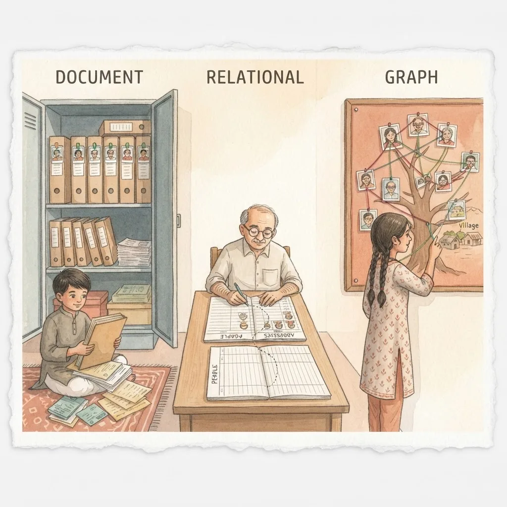
Think of three ways to keep your family's records. A file folder per person (document): open one folder and everything about Amma is inside. A register with columns (relational): one register for people, one for addresses, and you match them by a number. A family tree chart on the wall (graph): strings connect anyone to anyone, cousins, in-laws, villages. All three can store the same facts; each makes different questions easy.
The chapter opens with a quote from the philosopher Ludwig Wittgenstein (Tractatus Logico-Philosophicus, 1922): "The limits of my language mean the limits of my world." The point for us: the data model you pick limits what you can easily say about your data.
Kleppmann calls data models perhaps the most important part of developing software, because they shape not only how the code is written but also how we think about the problem.
Most apps are built by layering one data model on top of another. At each layer the key question is: how is this represented in terms of the layer below? The book lists four layers:
Real apps may have more in-between layers (APIs built on APIs), but the idea holds: each layer hides the complexity of the layers below by offering a clean data model. These abstractions let different groups of people (say, the database vendor's engineers and the app developers using that database) work together effectively.
Every data model carries assumptions about how it will be used. Some uses are easy, some unsupported; some operations fast, some slow; some transformations feel natural, some awkward. Mastering even one model takes a lot of effort (think of how many books exist just on relational data modelling). Building software is hard enough with one model, even without worrying about its insides. But the model has a big effect on what the software above it can and can't do. So it is important to choose one that fits the application.
The plan for the chapter: compare the relational model, the document model and a few graph-based models (layer 2), and compare several query languages and their use cases.
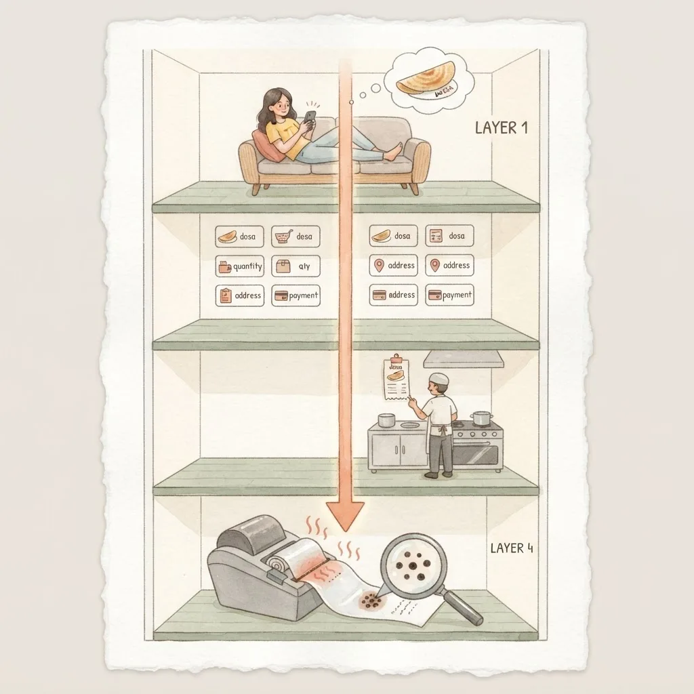
Ordering on a food delivery app. You (layer 1) think "one masala dosa". The app turns that into an order record (layer 2). The restaurant's kitchen system turns the record into a printed ticket (layer 3). The printer turns the ticket into heat on thermal paper (layer 4). You never think about thermal paper, and the printer never thinks about dosa. Where it breaks: in software, a bad choice at layer 2 leaks upward. If your model is awkward for your questions, every line of app code pays for it, which is why the choice matters so much.
An abstraction is a promise: "give me data in this shape and I'll handle the rest". The promise is what lets two teams who never meet cooperate. But the promise also fixes which questions are cheap. A layer can only make fast what its representation makes easy, and that's why the rest of the chapter keeps asking "what kind of relationships does your data have?"
The best-known data model today is probably SQL's, based on the relational model that Edgar Codd proposed in 1970 [1]. Data is organized into relations (in SQL: tables), and each relation is an unordered collection of tuples (in SQL: rows).
It started as a theoretical proposal, and many people doubted it could be built efficiently. But by the mid-1980s, relational database management systems (RDBMS) and SQL were the tool of choice for anyone storing and querying data with a regular structure. That dominance has lasted about 25–30 years, an eternity in computing.
Its roots are in business data processing on 1960s–70s mainframes. The use cases look boring today:
Other databases of that era forced developers to think hard about the internal representation of data. The relational model's goal was to hide that implementation detail behind a cleaner interface.
Many rivals came and went, each with a lot of hype that never lasted [2]:
As computers got far more powerful and networked, they were used for more diverse purposes, and relational databases generalized remarkably well beyond business data processing. Much of the web is still powered by them: online publishing, discussion, social networking, e-commerce, games, software-as-a-service productivity apps, and much more.
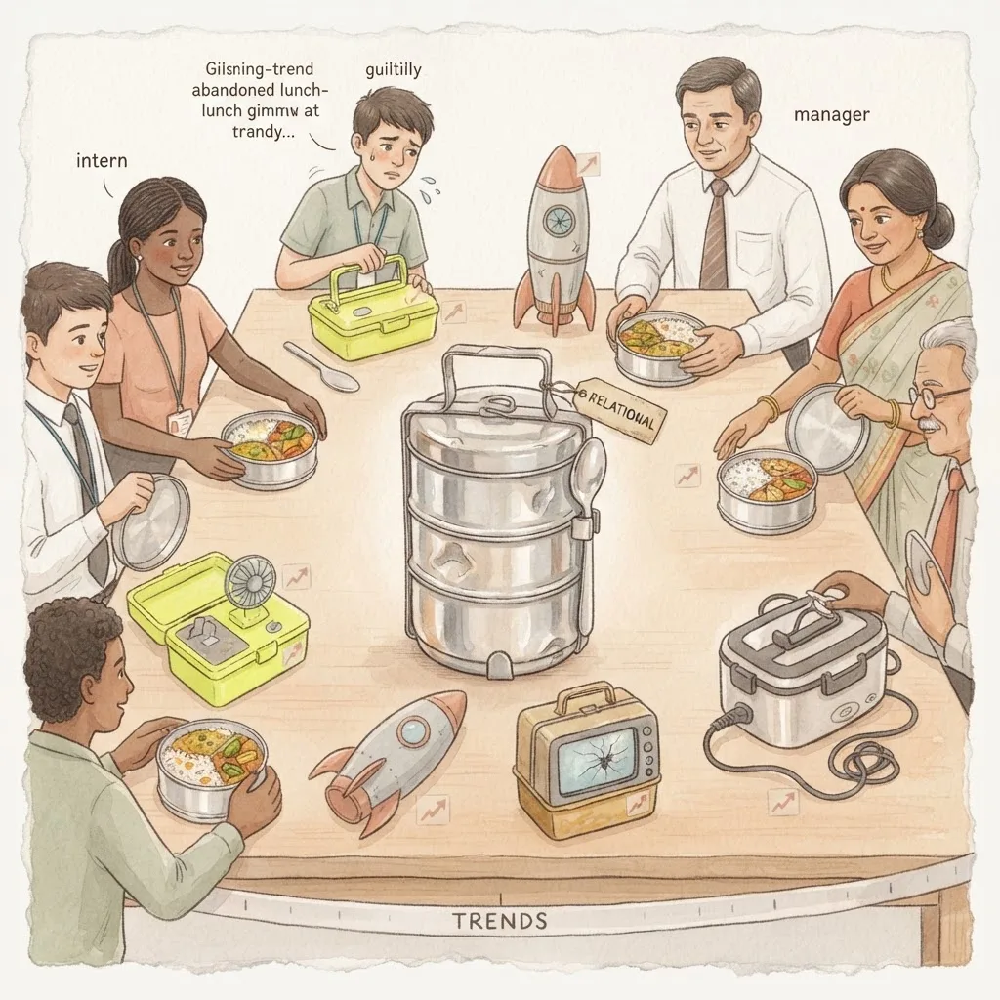
The relational model is like the steel tiffin: every few years someone launches a fancy new lunch box with a gimmick, it trends, and then everyone quietly goes back to the steel tiffin because it just works for most meals. Where it breaks: some of the challengers did leave real ideas behind (and as you'll see, the relational side absorbed several of them, like JSON columns).
The relational model separated what data you have from how it is stored. Because apps only talk about rows and conditions, the database is free to change the storage underneath. That separation is why one design could stretch from 1970s payroll to 2010s social networks.
In the 2010s, NoSQL is the latest attempt to overthrow relational dominance. The name is unfortunate, because it doesn't refer to any particular technology: it was just a catchy Twitter hashtag for a 2009 meetup on open source, distributed, non-relational databases [3]. The term struck a nerve, spread through the web startup community and beyond, and has since been reinterpreted as Not Only SQL [4].
Driving forces behind NoSQL adoption:
Different apps have different requirements, and the best tech for one may not be best for another. So relational databases will likely keep being used alongside a variety of non-relational stores. This is sometimes called polyglot persistence [3].
A kitchen has a pressure cooker, a tawa and a kadai. Nobody argues which one is "the" utensil; you pick per dish. Polyglot persistence is the same: rice in the cooker, dosa on the tawa. Where it breaks: utensils don't need to agree with each other. Databases holding copies of related data do need to stay in sync, which is a real cost (Part III of the book is about exactly that).
Each force above maps to a weakness someone felt: scale (one big machine is expensive), cost/licensing, missing operations (like graph traversals), and schema friction. NoSQL isn't one technology answering all four; it's a family of answers, each picking a subset.
Most app code today is written in object-oriented languages. That leads to a common criticism of SQL: if data lives in tables, you need an awkward translation layer between objects in your code and tables, rows and columns in the database. This disconnect is called the impedance mismatch.
Footnote i: the term is borrowed from electronics. Every circuit has an impedance (resistance to alternating current) on its inputs and outputs. When you connect one circuit's output to another's input, power transfer is best when the two impedances match. A mismatch causes signal reflections and other trouble.
Object-relational mapping (ORM) frameworks like ActiveRecord and Hibernate reduce the boilerplate of that translation layer, but they can't completely hide the differences between the two models.
The running example is a LinkedIn profile (a résumé). The whole profile is identified by a unique user_id. Fields like first_name and last_name appear exactly once per user, so they are columns of a users table. But most people have had several jobs (positions), varying periods of education, and any number of contact details. That is a one-to-many relationship from the user to these items, and there are three ways to represent it:
positions, education and contact_info in separate tables, each with a foreign key pointing back to users (Figure 2-1).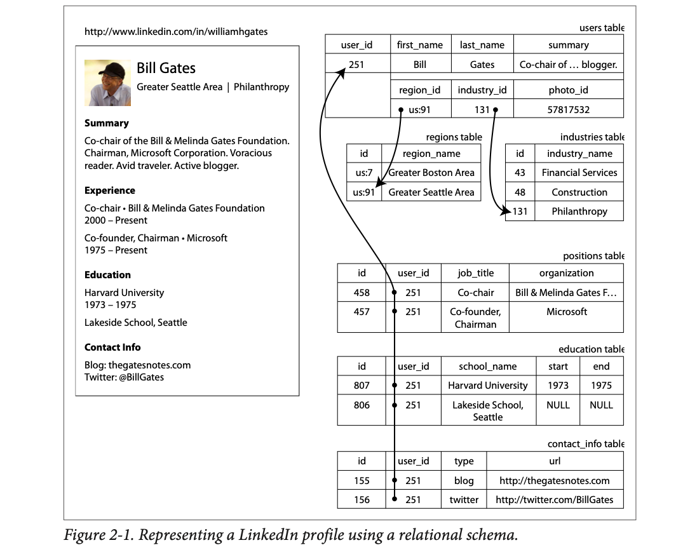
Left: what a human sees, Bill Gates's profile page. Right: how a normalized SQL schema stores it. The users row (id 251) holds the one-per-person fields, plus region_id us:91 and industry_id 131, which point into the small regions table ("Greater Seattle Area") and industries table ("Philanthropy"). The long vertical line is the foreign key: every row in positions (458 Co-chair, 457 Co-founder/Chairman), education (807 Harvard 1973–1975, 806 Lakeside School with NULL dates) and contact_info (155 blog, 156 twitter) carries user_id = 251. One page on screen = rows in six tables.
For something like a résumé, which is mostly a self-contained document, JSON can be a good fit (Example 2-1). JSON is much simpler than XML. Document-oriented databases like MongoDB [9], RethinkDB [10], CouchDB [11] and Espresso [12] support this model.
{
"user_id": 251,
"first_name": "Bill",
"last_name": "Gates",
"summary": "Co-chair of the Bill & Melinda Gates... Active blogger.",
"region_id": "us:91",
"industry_id": 131,
"photo_url": "/p/7/000/253/05b/308dd6e.jpg",
"positions": [
{"job_title": "Co-chair", "organization": "Bill & Melinda Gates Foundation"},
{"job_title": "Co-founder, Chairman", "organization": "Microsoft"}
],
"education": [
{"school_name": "Harvard University", "start": 1973, "end": 1975},
{"school_name": "Lakeside School, Seattle", "start": null, "end": null}
],
"contact_info": {
"blog": "http://thegatesnotes.com",
"twitter": "http://twitter.com/BillGates"
}
}
Small detail as printed in the book: the table in Figure 2-1 has a photo_id column (57817532), while the JSON in Example 2-1 has a photo_url field.
Some developers feel JSON reduces the impedance mismatch between app code and storage. But JSON also has problems as an encoding format (Chapter 4). Its lack of a schema is often called an advantage; see plate 12.
The JSON version has better locality. To fetch a profile from Figure 2-1 you either run multiple queries (one per table, by user_id) or a messy multi-way join. With JSON, everything is in one place and one query is enough.
The one-to-many relationships from the profile to positions, education and contact info form a tree, and JSON makes that tree explicit (Figure 2-2).
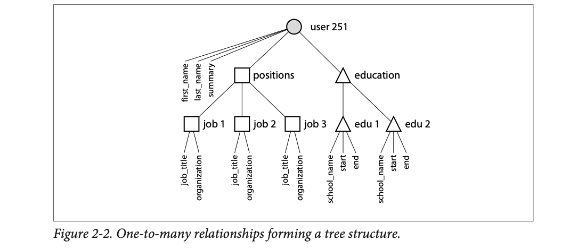
The grey circle user 251 is the root. Plain fields (first_name, last_name, summary) hang straight off it as leaves. positions (square) branches into job 1, job 2, job 3, each with its own job_title and organization. education (triangle) branches into edu 1 and edu 2, each with school_name, start and end. Every child has exactly one parent: that's what "tree" means, and it's exactly the nesting of the JSON brackets above. (The figure draws three jobs to show "many"; the JSON example has two.)
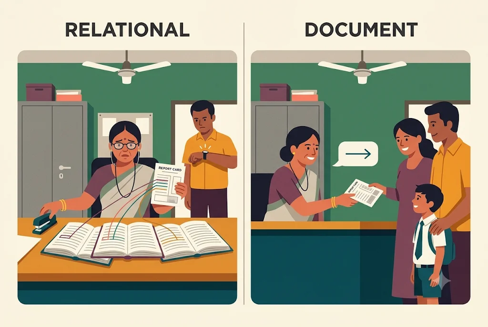
A school report card. The relational way is like the school keeping one register for names, another for marks, another for attendance, and stapling your card together each time a parent asks. The document way is the printed card itself: everything about one student on one sheet, handed over in one go. Where it breaks: the moment two cards need to share something (the same class teacher, the same school bus), the "one sheet" idea starts copying that shared thing onto every card; see the next plate.
Objects in code are nested: a User holds a list of Positions. Tables are flat: a row cannot hold a list (in classic SQL). So an ORM must shred the object into rows on write and reassemble it on read, using joins. A document keeps the nesting as-is, so the "reassemble" step disappears, as long as the data really is a tree.
Bill's page needs: 1 users row, 2 positions rows, 2 education rows, 2 contact_info rows, plus 1 regions lookup and 1 industries lookup. With separate queries by user_id that's 4 queries (users, positions, education, contact_info), plus 2 more to turn us:91 and 131 into names, so 6 round trips, or one big join. With Example 2-1, it is 1 read of one document, though the region and industry IDs still need resolving (that's the topic of plate 5).
In Example 2-1, region_id and industry_id are IDs, not the plain text "Greater Seattle Area" and "Philanthropy". Why?
If the UI had free-text boxes for region and industry, storing plain text would make sense. But standardized lists (pick from a drop-down or an autocompleter) have advantages:
ID or text is really a question of duplication. With an ID, the human-meaningful information ("Philanthropy") is stored once, and everything else refers to it by an ID that only means something inside the database. With text, you copy the human-meaningful info into every record that uses it.
Because an ID has no meaning to humans, it never needs to change, even if what it identifies changes. Anything meaningful to humans may need to change some day, and if it's duplicated, every copy must be updated: more write work, and a risk of inconsistency (some copies updated, others not). Removing such duplication is the key idea of normalization.
Footnote ii: textbooks list several "normal forms", but the distinctions matter little in practice. Rule of thumb: if you're duplicating values that could be stored in just one place, the schema is not normalized.
Book aside: database people love to argue about normalization vs. denormalization; the book suspends judgement here and returns in Part III with systematic ways of handling caching, denormalization and derived data.
Five profiles live in "Bombay". The city is renamed "Mumbai". Compare how much work the rename takes and what a crash halfway through does. modelled example
The catch: normalizing needs many-to-one relationships (many people live in one region, many work in one industry), and these don't fit nicely into the document model. In relational databases, referring to rows in other tables by ID is normal because joins are easy. In document databases, joins aren't needed for one-to-many trees, and join support is often weak.
Footnote iii (at the time of writing, 2016): joins are supported in RethinkDB, not supported in MongoDB, and only supported in pre-declared views in CouchDB.
MongoDB later added a $lookup stage (a left outer join) to its aggregation pipeline, starting with version 3.2. The book's point still holds: joins are a bolt-on in most document stores, not their natural mode.
If the database doesn't support joins, you must emulate a join in application code by making several queries. (Here, the region and industry lists are probably small and slow-changing enough to keep in app memory. But the work of joining has still moved from the database to your code.)
And even if version 1 of your app fits a join-free document model nicely, data tends to become more interconnected as features are added. Two changes to the résumé example:
organization and school_name are just strings. Maybe they should be references to entities, so each organization, school or university can have its own web page (logo, news feed, etc.), and each résumé can link to them and show their logos and info (Figure 2-3).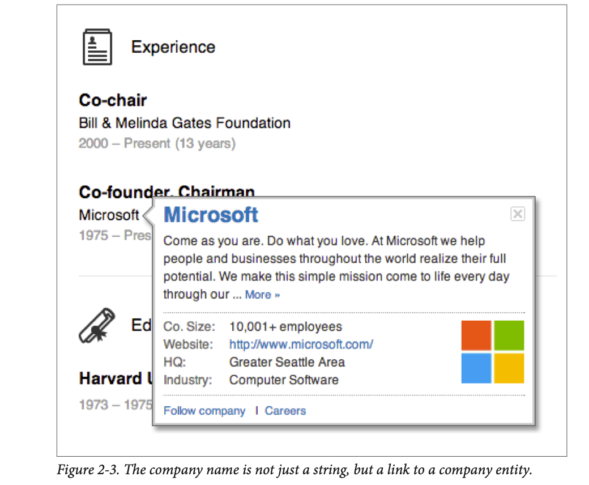
On Bill's experience list, "Microsoft" is not just text: hovering it pops up a company card with its own description, size (10,001+ employees), website, HQ (Greater Seattle Area), industry (Computer Software), logo and "Follow company / Careers" links. That card is a separate entity shared by every employee's résumé. Many résumés → one company = many-to-one; and since one person also has many companies, the overall relation is many-to-many.
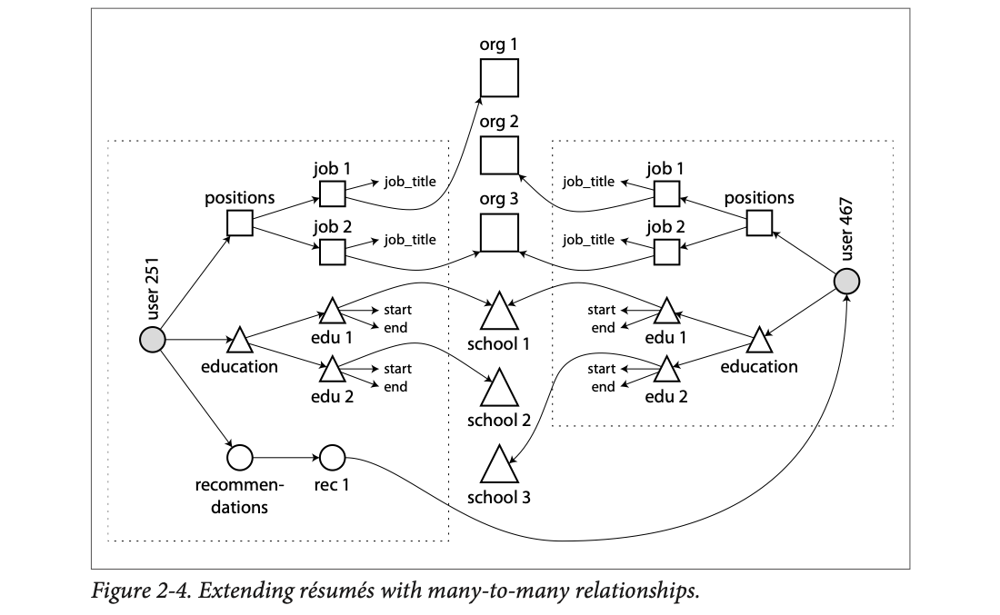
Each dotted rectangle is one user's own tree (user 251 on the left, user 467 on the right) and could be one document. The shapes in the middle (org 1–3, school 1–3) live outside both rectangles, because both users point at them. User 251's job 2 and user 467's job 2 both point at org 3. Both users' edu 1 point at school 1. At the bottom, user 251's rec 1 curves all the way to user 467. Every arrow that crosses a dotted border is a reference that needs a join (or extra query) when you read it.
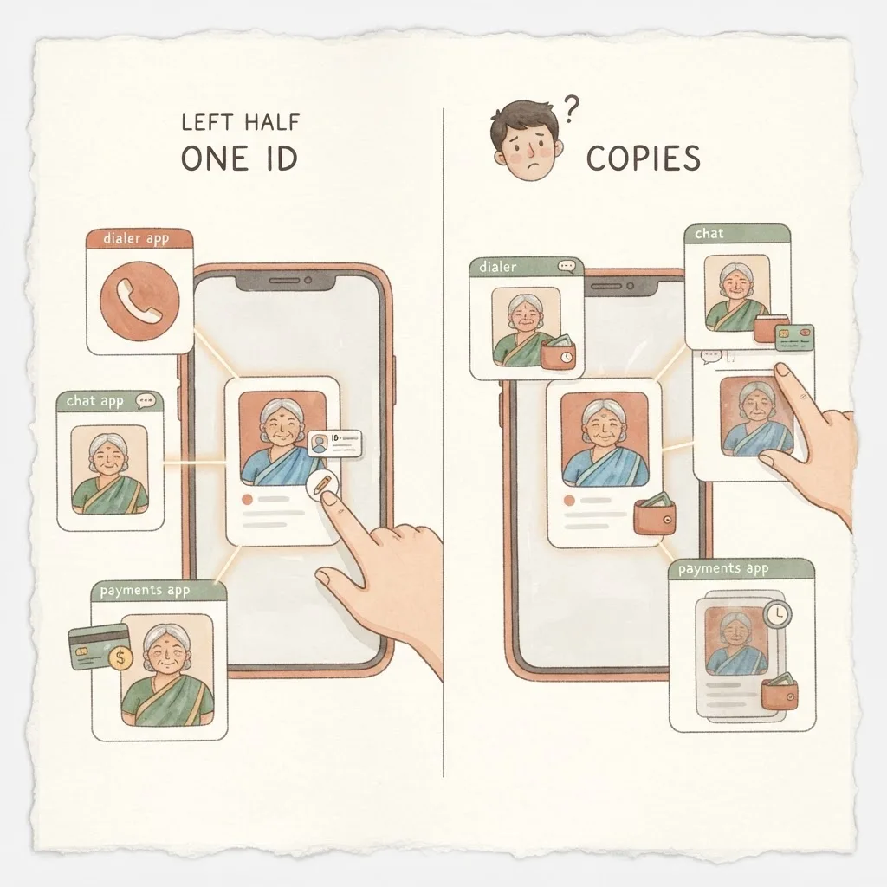
Your phone's contacts. You save "Amma" once, and WhatsApp, the dialer and UPI all show that one entry by its ID. If you change her photo, every app shows the new one. Now imagine each app kept its own copy of her name and photo: you'd update one and the others would go stale. That's the ID-vs-copy choice. Where it breaks: a contact list lives on one phone; in a database the "look up the ID" step is a join, and on a document store that join may have to be done by your code with extra round trips.
A tree has one parent per node, so it nests perfectly inside one document. A shared thing (a region, a company, another user) has many parents, so it can't live inside any single one of them. Either you copy it into each parent (denormalize, and pay on every update) or you store it separately and point to it (normalize, and pay a join on every read). There is no free option; the database you choose decides who pays and where.
Suppose 1,000,000 profiles say "Bombay" as text, and the city is renamed. Text storage: 1,000,000 row updates; if the job dies at row 400,000, the site shows both names. ID storage: 1 update to regions, and every profile shows "Mumbai" on the next read. The price: each profile read now needs the extra lookup of region_id. modelled numbers
In relational databases, many-to-many relationships and joins are used routinely without thinking twice. Document databases and NoSQL reopened the debate on how best to represent such relationships. But the debate is much older than NoSQL: it goes back to the very first computerized database systems.
The most popular database for business data processing in the 1970s was IBM's Information Management System (IMS). It was originally built for stock-keeping in the Apollo space program and first released commercially in 1968 [13]. It is still in use and maintained today, running on OS/390 on IBM mainframes [14].
IMS used a fairly simple model called the hierarchical model, which is remarkably similar to the JSON model of document databases [2]. All data was a tree of records nested within records, much like the JSON tree of Figure 2-2.
Like document databases, IMS:
Developers had to choose: duplicate (denormalize) the data, or manually resolve references from one record to another. These 1960s problems are very much like the ones developers hit with document databases today [15].
Two main solutions were proposed to fix the hierarchical model's limits: the relational model (which became SQL and took over the world) and the network model (which had a big following at first but faded into obscurity). The "great debate" between the two camps lasted for much of the 1970s [2]. Because the problem they solved is still relevant, the book revisits that debate in today's light (next two plates).
| IMS (hierarchical), 1968 | Document DB, 2010s | |
|---|---|---|
| Shape of data | tree of records nested in records | tree of JSON objects nested in objects |
| One-to-many | easy | easy |
| Many-to-many | hard | hard |
| Joins | none | often weak / none |
| Your choice when data is shared | duplicate it, or resolve references by hand | duplicate it, or resolve references by hand |
Bill's positions and school follow Figure 2-1. Mary, IIT Bombay, org:7 and the rename are modelled to show the problem.
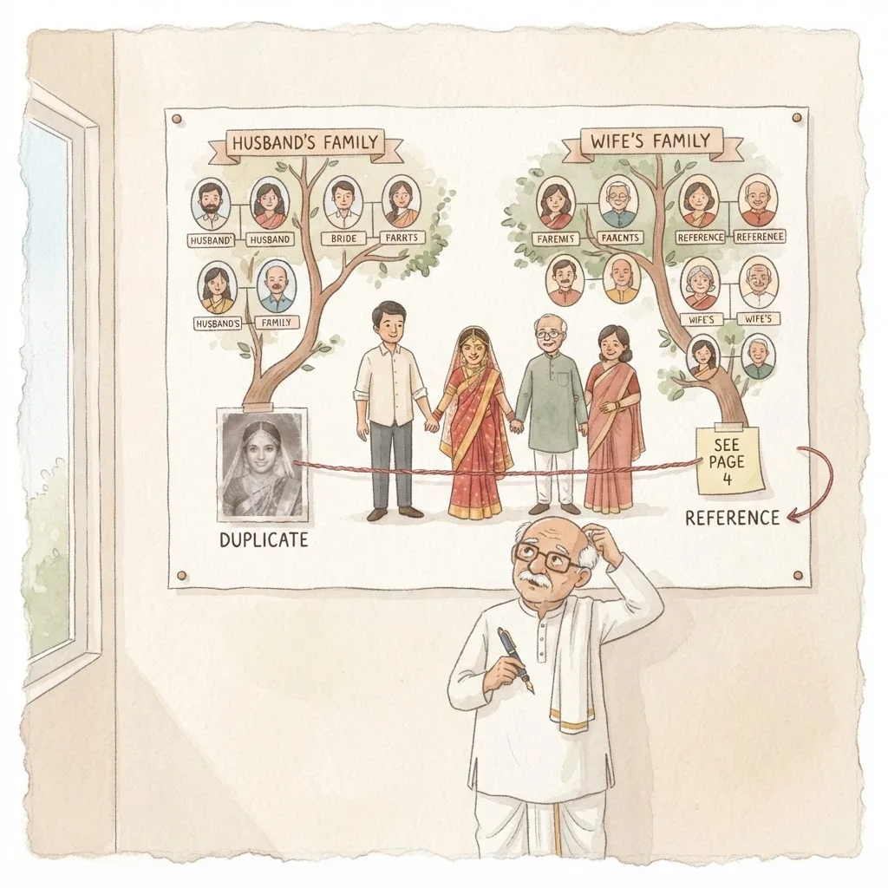
A joint family tree chart drawn as a strict tree: each person hangs under one parent. It works until a daughter-in-law joins: she belongs under her husband's branch and her own parents' branch. On a strict tree you either draw her twice (duplicate) or write "see page 4" (manual reference). That's IMS, and that's a document DB with shared data. Where it breaks: the analogy suggests the tree is wrong; it isn't, for data that truly is a tree (one résumé) it's the best fit.
Trees give you a free "physical clustering": a parent and all its children sit together, so loading them is one read. The cost is that anything with more than one parent breaks the shape. Both IMS and modern document DBs optimise for that one-read case and push the multi-parent case back to the developer.
The network model was standardized by a committee called the Conference on Data Systems Languages (CODASYL) and implemented by several vendors, so it's also called the CODASYL model [16].
It is a generalization of the hierarchical model. In a tree, every record has exactly one parent; in the network model a record can have multiple parents. Example: one record for the region "Greater Seattle Area", and every user who lives there linked to it. That allows many-to-one and many-to-many relationships.
The links are not foreign keys, but more like pointers in a programming language (though still stored on disk). The only way to reach a record was to follow a path from a root record along chains of links: an access path.
Manual access-path selection made the most of 1970s hardware, like tape drives whose seeks are extremely slow. But it made querying and updating code complicated and inflexible. With both hierarchical and network models, if you didn't have a path to the data you wanted, you were stuck. You could change the access paths, but then you had to go through lots of hand-written query code and rewrite it. Changing an app's data model was hard.
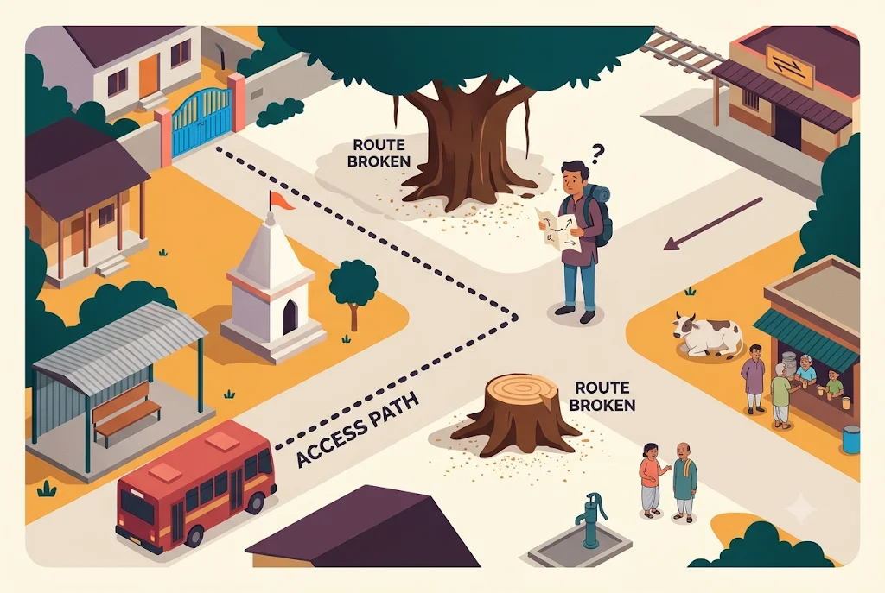
An old village address: "From the bus stand, walk past the temple, second left after the banyan tree, blue gate." You can find the house, but only along that route. If the banyan tree is cut down, or you start from the railway station instead, the directions are useless and someone must write new ones. That is an access path. Where it breaks: a person adapts to a missing tree; 1970s code didn't, it had to be rewritten by hand.
The pointer stored on disk is the relationship. That makes following it very cheap (no index lookup), which mattered on tapes. But it also means the database has no general way to answer a question that doesn't start at a root and follow existing pointers. The query plan was baked into application code, so every new kind of question meant new code.
In the widget, "Seattle users in Philanthropy" needs you to walk the whole Seattle chain (3 records) and, for each one, check whether it also sits on the Philanthropy chain. The data is all there; the hard part is that you must plan which chain to walk and which to check. Change the question slightly and you write a new walk. modelled records
The relational model did the opposite: it laid all the data out in the open. A relation (table) is simply a collection of tuples (rows), and that's it. No labyrinth of nested structures, no complicated access paths.
Footnote iv: foreign key constraints let you restrict modifications, but the relational model doesn't require them. And even with constraints, joins on foreign keys happen at query time, whereas in CODASYL the join was effectively done at insert time.
In a relational database, the query optimizer automatically decides which parts of the query to run in which order, and which indexes to use. Those choices are the "access path", but the big difference is that the optimizer makes them, not the developer, so you rarely think about them.
Want to query in a new way? Just declare a new index, and queries automatically use whichever indexes fit best. You don't change your queries to benefit. So the relational model made adding features much easier.
Query optimizers are complicated beasts that took many years of research and development [18]. The key insight: you build the optimizer once, and every application using the database benefits. Without an optimizer it's easier to hand-code access paths for one particular query than to write a general-purpose optimizer, but the general solution wins in the long run.
SELECT * FROM users WHERE region_id = 'us:91' AND industry_id = 131;
Table size, selectivities and row counts here are modelled (1,000,000 users; 0.5% in us:91; 0.2% in industry 131). The point is that the query text above never changes.
Google Maps vs. the village directions of plate 7. You type the destination (what you want), and Maps picks the route (how), using whatever roads exist today. When a new flyover opens, Maps starts using it; you don't rewrite your request. Where it breaks: Maps sometimes picks a bad route, and so does a query optimizer. Real DBAs sometimes have to look at the plan and nudge it.
Because the query says only which rows, not how to reach them, the database keeps statistics (table sizes, how many distinct values) and compares candidate plans: full scan, index A, index B, both. It picks the cheapest guess. Adding an index adds a candidate plan; the query text stays the same. One optimizer, written once, serves millions of queries.
Document databases went back to the hierarchical model in one respect: they store nested records (one-to-many, like positions, education, contact_info in Figure 2-1) inside the parent record instead of in a separate table.
But for many-to-one and many-to-many, relational and document databases are not fundamentally different. In both, the related item is referenced by a unique identifier: a foreign key in the relational model, a document reference in the document model [9]. That identifier is resolved at read time, by a join or follow-up queries. To date, document databases have not followed the path of CODASYL (no stored pointer chains, no access paths).
| Relationship | Hierarchical (IMS) | Network (CODASYL) | Relational | Document |
|---|---|---|---|---|
| One-to-many | nested child records | pointer chain | separate table + foreign key | nested inside parent (like IMS) |
| Many-to-one / many-to-many | duplicate, or resolve by hand | multiple parents via pointers; join done at insert | foreign key, join at read | document reference, resolved at read (like relational) |
| How you find data | walk the tree | walk access paths | declarative query + optimizer | by ID / query; references followed at read |
IDs 251 and us:91 are from Figure 2-1 and plate 5; the two-request flow is the usual pattern when the document DB has no join.
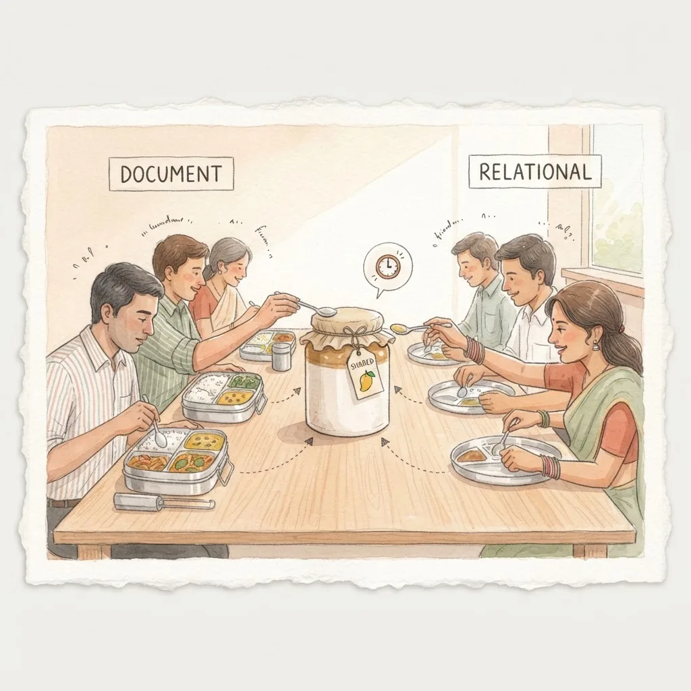
A tiffin with compartments (document) holds your rice, dal and sabzi together, like IMS. But the pickle is shared from a big jar on the table, and both tiffin users and plate users reach for the same jar by name ("the mango one"). For the shared jar, both styles behave the same. Where it breaks: in a database "reaching for the jar" is a lookup that costs time, and how fast it is depends on whether the database does it (join) or your code does (extra queries).
The key word is read time. CODASYL resolved relationships when you inserted (it physically linked the record). Relational and document DBs both store just an ID and look it up later. That late binding is what makes adding new kinds of questions easy, and both camps kept it.
There are many differences between relational and document databases, including fault-tolerance (Chapter 5) and concurrency (Chapter 7). This chapter looks only at the data model.
The next three sub-sections take these arguments one by one: simpler code (plate 11), schema flexibility (plate 12), locality (plate 13).
A study aid that applies the book's reasoning (plates 10–11) to four workloads; the tilt angles are just for show.
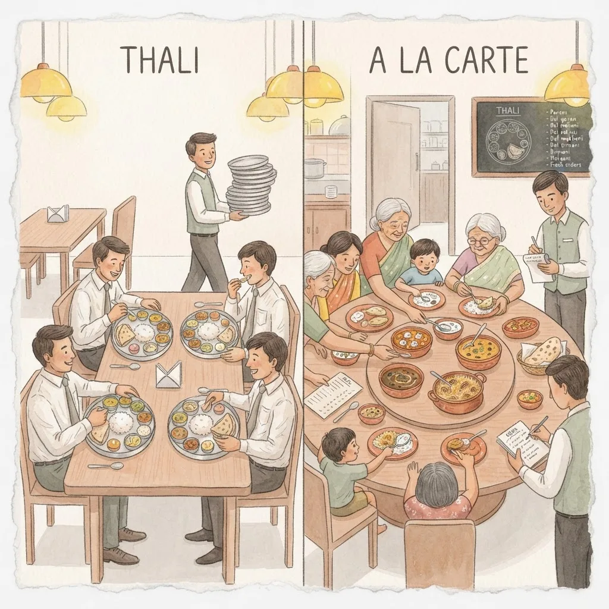
Choosing between a ready-made thali (document: everything on one plate, fast to serve) and à la carte (relational: order dishes separately, combine as you like). A thali is perfect when everyone wants the same set meal; à la carte wins when people mix and share. Where it breaks: restaurants rarely switch menus overnight, while apps grow new features all the time, which tends to push data toward "mix and share".
If your data has a document-like structure (a tree of one-to-many relationships, where you usually load the whole tree at once), a document model is probably a good idea. The relational technique of shredding (splitting a document-like structure across several tables, like positions, education, contact_info in Figure 2-1) can lead to cumbersome schemas and needlessly complicated code.
The document model has limits. You can't refer directly to a nested item in a document; you must say something like "the second item in the list of positions for user 251" (much like an access path in the hierarchical model). As long as documents aren't too deeply nested, that's usually fine.
Poor join support may or may not matter. For example, an analytics app that uses a document database to record which events occurred at which time may never need many-to-many relationships [19].
But if your app does use many-to-many relationships, documents get less appealing:
In such cases the document model can lead to significantly more complex code and worse performance [15].
So you can't say in general which model gives simpler code; it depends on the relationships between data items. For highly interconnected data: the document model is very awkward, the relational model is acceptable, and graph models are the most natural.
A study aid that follows the book's reasoning, not a rule from the book.
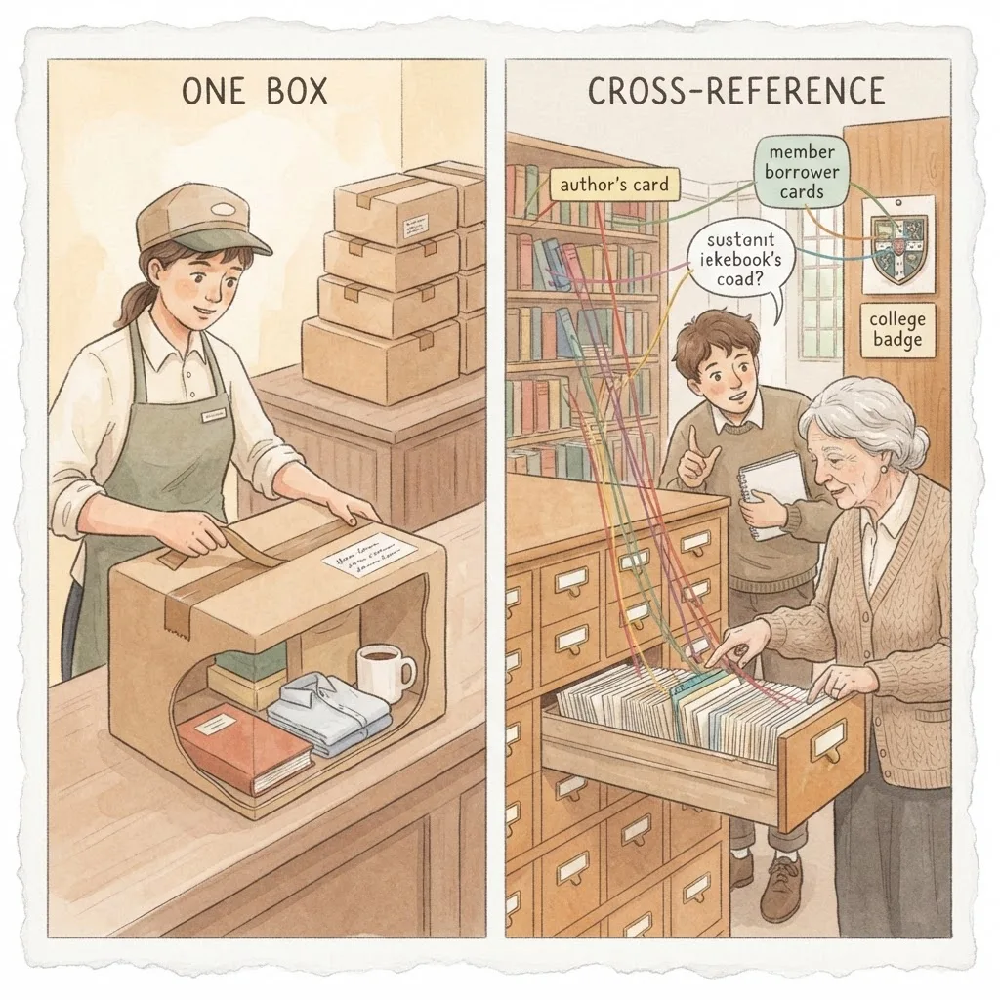
A courier parcel vs. a library. If you always ship one sealed box per customer (an order with its items), the parcel is simplest. If people constantly ask "which books by this author are borrowed by members from this college?", you want the library's catalogue cards that cross-reference everything. Where it breaks: a real app usually has both kinds of data, which is why plate 14 says the two models are converging.
Code complexity follows the mismatch between your data's shape and the model's shape. Tree data in tables means shredding and reassembling; graph data in documents means hand-written joins and copy-syncing. The "simplest" model is the one that makes your most common access pattern a single, natural operation.
Most document databases, and the JSON support in relational databases, don't enforce any schema on documents. (XML support in relational DBs usually comes with optional schema validation.) No schema means any keys and values can be added to a document, and readers have no guarantee about which fields a document contains.
Document databases are sometimes called schemaless, but that's misleading: the code that reads the data usually assumes some structure. There is an implicit schema, just not enforced by the database [20]. More accurate terms [21]:
Schema-on-read is like dynamic (run-time) type checking in programming languages; schema-on-write is like static (compile-time) type checking. Just as static vs. dynamic typing is hotly debated [22], schema enforcement is a contentious topic with no right or wrong answer in general.
The difference shows most when you change the format of your data. Example: you store each user's full name in one field and now want first and last names separately [23].
if (user && user.name && !user.first_name) {
// Documents written before Dec 8, 2013
// don't have first_name
user.first_name = user.name.split(" ")[0];
}Start writing new documents with the new fields; the app handles old ones when it reads them.
ALTER TABLE users ADD COLUMN first_name text; UPDATE users SET first_name = split_part(name, ' ', 1); -- PostgreSQL UPDATE users SET first_name = substring_index(name, ' ', 1); -- MySQL
Change the schema, then rewrite existing rows.
Schema changes have a reputation for being slow and needing downtime. Not entirely deserved: most relational systems run ALTER TABLE in a few milliseconds. The exception is MySQL, which copies the entire table on ALTER TABLE, which can mean minutes or even hours of downtime on a big table. Tools exist to work around this [24, 25].
Running the UPDATE on a large table is likely slow on any database, since every row is rewritten. If that's unacceptable, the app can leave first_name at its default NULL and fill it in at read time, just like with a document database.
Users and step counts are modelled; the behaviours (ms ALTER, MySQL table copy, read-time fill) are the book's.
Schema-on-read helps when the data is heterogeneous (items in the collection don't all share a structure), for example because:
Then a schema may hurt more than help, and schemaless documents can be a much more natural model. But when all records are expected to have the same structure, schemas are a useful way of documenting and enforcing it. Schemas and schema evolution return in Chapter 4.
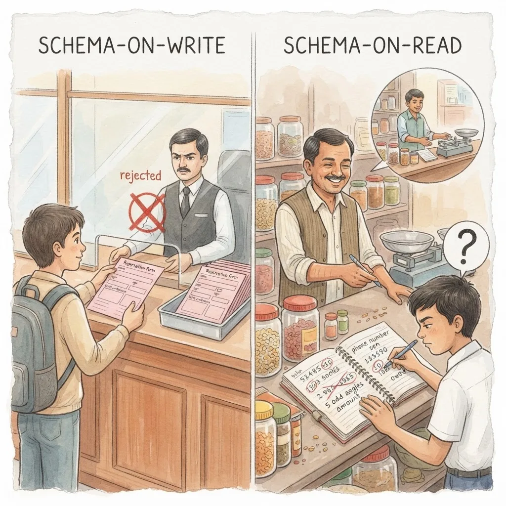
Railway reservation form vs. a notebook. The IRCTC form (schema-on-write) refuses to submit without age and berth preference; every booking is guaranteed to have them. A shopkeeper's notebook (schema-on-read) lets anyone scribble anything; whoever reads it later must figure out "is this a phone number or an amount?". Where it breaks: a notebook has no "reader code"; in software the reader code is the schema, it's just hidden in the app instead of declared in the database.
The structure has to be checked somewhere. Schema-on-write checks it once, at the door, so readers can trust it. Schema-on-read checks it every time someone reads, in every piece of code that reads, so the logic for "old format" lives in the app forever (or until a backfill). Neither removes the work; they move it.
A 200 GB users table. PostgreSQL-style: ALTER TABLE takes milliseconds (it's a metadata change), but the UPDATE rewrites every row, slow anywhere. MySQL-style (in the book's era): the ALTER itself copies 200 GB, minutes to hours. Read-time fill: zero migration work, but every read path carries the if (!user.first_name) branch. modelled size
Newer MySQL versions (8.0+) can add some columns "instantly" without copying the table. The tools the book cites, pt-online-schema-change [24] and SoundCloud's Large Hadron Migrator [25], copy the table in the background while it stays online.
A document is usually stored as a single continuous string, encoded as JSON, XML or a binary variant (like MongoDB's BSON, short for Binary JSON). If your app often needs the entire document (say, to render it on a web page), this storage locality is a performance win. If data is split over several tables (Figure 2-1), you need multiple index lookups, which may mean more disk seeks and more time.
The advantage only applies if you need large parts of the document at once:
So the usual advice is to keep documents fairly small and avoid writes that grow a document [9]. These limits significantly narrow the cases where document databases are useful.
Grouping related data for locality is not unique to documents:
More on locality in Chapter 3.
modelled cost: each separate lookup = 1 random seek of 10 ms (spinning disk), reading = 1 ms per 100 KB. Real numbers vary; the shape of the trade-off is the book's.
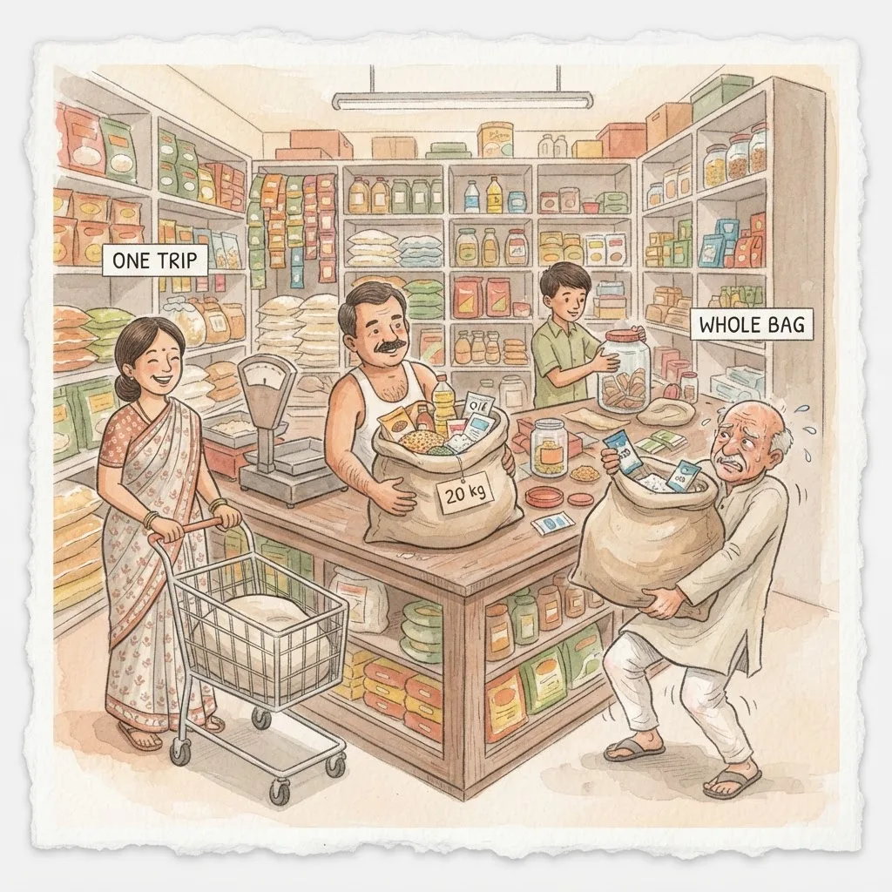
A kirana shop that packs a monthly ration bag for you: atta, dal, oil, all in one bag on one shelf. Picking it up is one trip. But if you only wanted the salt, you still lift the whole 20 kg bag, and if you add one more item that doesn't fit, they must repack the bag. Where it breaks: a shopkeeper can squeeze in a packet; a database usually has to rewrite the whole encoded document somewhere new when it grows.
Disks (especially spinning ones) are fast at reading a long continuous run of bytes and slow at jumping around (seeks). One document = one jump + one long read. Many tables = many jumps. But the document's bytes are packed tightly, so a field that grows shifts everything after it; that's why in-place updates only work if the size stays the same.
Relational side: most relational systems (other than MySQL) have supported XML since the mid-2000s, with functions to modify XML documents locally and to index and query inside them. That lets apps use data models very close to a document database's. PostgreSQL since 9.3 [8] and IBM DB2 since 10.5 [29] give similar support for JSON. Given JSON's popularity for web APIs, other relational DBs are likely to follow.
Document side: RethinkDB supports relational-like joins in its query language, and some MongoDB drivers automatically resolve database references. That's effectively a client-side join, probably slower than a join inside the database, because it needs extra network round-trips and is less optimized.
Relational and document databases seem to be getting more alike, and that's good: the models complement each other. If one database handles document-like data and can run relational queries on it, apps can use whatever mix fits best. A hybrid of the relational and document models is a good route for databases to take in future.
Footnote v: Codd's original 1970 description [1] already allowed something like JSON inside a relational schema. He called it nonsimple domains. A value in a row needn't be a simple number or string. It could be a nested relation (a whole table). So one value could hold a tree, nested as deep as you like. That is much like the JSON/XML support added to SQL over 30 years later.
Phones and cameras: phones added better cameras, cameras added Wi-Fi and apps. Each borrowed the other's strength until most people carry one hybrid device. Where it breaks: specialist cameras still exist for specialist jobs, and the book's summary agrees: there is still no single one-size-fits-all database.
The trade-offs of plates 10–13 are about usage patterns, not about some law of nature. Once a relational engine can store a JSON value in a column and index inside it, you get document locality for tree-shaped parts and joins for shared parts, in one system.
PostgreSQL 9.4 (2014) added jsonb, a binary JSON type with GIN (Generalized Inverted Index) indexes; MySQL 5.7 added a native JSON type; MongoDB 3.2 added $lookup. The convergence the book predicted did happen.
The relational model also brought a new way of querying: SQL is a declarative query language, while IMS and CODASYL queried the database with imperative code.
Footnote vi: IMS and CODASYL both used imperative query APIs. Apps usually used COBOL code to iterate over records one at a time [2, 16].
Most common programming languages are imperative. To return only the sharks from a list of animals:
function getSharks() {
var sharks = [];
for (var i = 0; i < animals.length; i++) {
if (animals[i].family === "Sharks") {
sharks.push(animals[i]);
}
}
return sharks;
}
In relational algebra you would write sharks = σfamily = "Sharks"(animals), where σ (Greek sigma) is the selection operator: it returns only the animals matching the condition. SQL followed relational algebra fairly closely:
SELECT * FROM animals WHERE family = 'Sharks';
Why declarative is attractive:
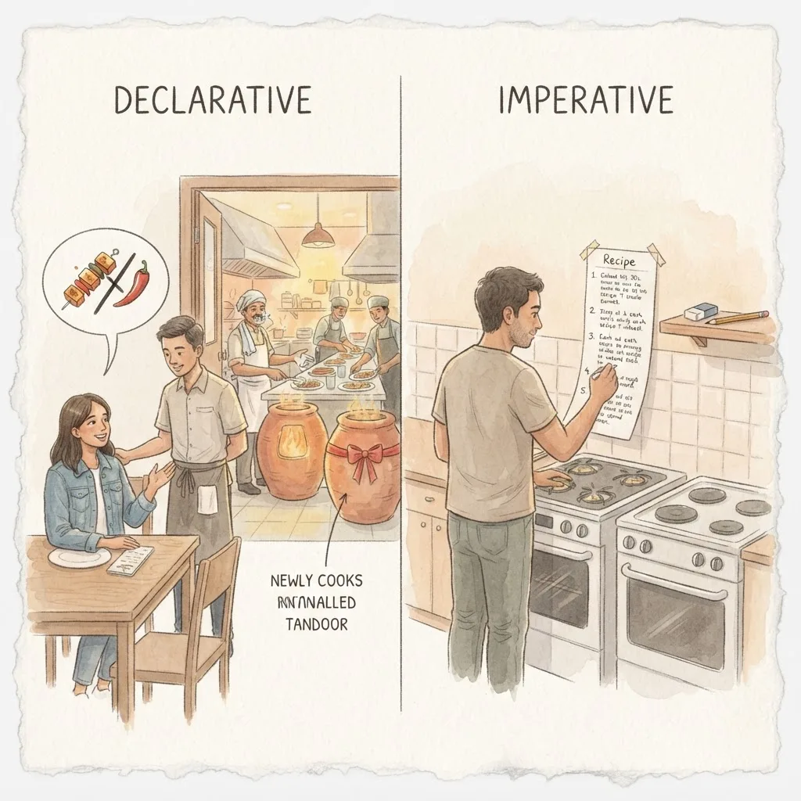
Ordering at a restaurant vs. cooking at home from a recipe. At the restaurant you say "one paneer tikka, less spicy" (declarative): the kitchen decides which cook, which tandoor, what order. If they buy a second tandoor, your order gets faster and you didn't change a word. The recipe (imperative) says step 1, step 2, step 3; to use two stoves you must rewrite the recipe. Where it breaks: a recipe lets you control every detail; declarative languages deliberately take some control away, which is exactly the point, but occasionally you'll miss it.
A declarative query is a contract about results, not steps. Anything not in the contract (row order, which index, how many threads) is the database's to choose. Imperative code is a contract about steps, so every side effect, including the order rows happen to come back in, might be something the program depends on, and the database must preserve it.
Six animals on disk: [Great White (Sharks), Blue Whale, Tiger Shark, Dolphin, Hammerhead, Orca]. The loop visits i = 0…5 and returns sharks in disk order: Great White, Tiger, Hammerhead. After compaction, disk order changes, so the loop's output order changes too; any code that assumed "Great White comes first" breaks. The SQL query never promised an order, so nothing breaks. Split over 3 cores, each core filters 2 rows and the results are merged. modelled rows
Declarative isn't only good for databases. Take a website about ocean animals. The user is on the Sharks page, so its navigation item is marked with the CSS (Cascading Style Sheets) class selected:
<ul>
<li class="selected">
<p>Sharks</p>
<ul>
<li>Great White Shark</li>
<li>Tiger Shark</li>
<li>Hammerhead Shark</li>
</ul>
</li>
<li>
<p>Whales</p>
<ul>
<li>Blue Whale</li>
<li>Humpback Whale</li>
<li>Fin Whale</li>
</ul>
</li>
</ul>
You want the selected page's title to have a blue background. With CSS:
li.selected > p {
background-color: blue;
}
The selector li.selected > p declares the pattern: every <p> whose direct parent is an <li> with class selected. <p>Sharks</p> matches; <p>Whales</p> doesn't, because its parent lacks the class.
With XSL (Extensible Stylesheet Language) instead of CSS you'd write something similar; the XPath (XML Path Language) expression li[@class='selected']/p is equivalent to the CSS selector:
<xsl:template match="li[@class='selected']/p">
<fo:block background-color="blue">
<xsl:apply-templates/>
</fo:block>
</xsl:template>
CSS and XSL are both declarative languages for styling a document. Now the imperative way, in JavaScript with the core Document Object Model (DOM) API:
var liElements = document.getElementsByTagName("li");
for (var i = 0; i < liElements.length; i++) {
if (liElements[i].className === "selected") {
var children = liElements[i].childNodes;
for (var j = 0; j < children.length; j++) {
var child = children[j];
if (child.nodeType === Node.ELEMENT_NODE && child.tagName === "P") {
child.setAttribute("style", "background-color: blue");
}
}
}
}
It works, but the code is awful: much longer and harder to understand, and it has serious problems:
selected class is removed (the user clicks another page), the blue won't be removed, even if the code re-runs; the item stays highlighted until the page reloads. With CSS, the browser automatically notices the rule no longer applies and removes the blue as soon as the class goes.document.getElementsByClassName("selected") or document.evaluate(), you must rewrite the code. Browser vendors, however, can make CSS and XPath faster without breaking compatibility.In a browser, declarative CSS is much better than imperative style manipulation in JavaScript. Likewise, in databases, declarative languages like SQL turned out much better than imperative query APIs.
Both menus start on Sharks. The left one is styled by a real CSS rule li.selected > p. The right one is styled by running the book's imperative JavaScript. Click a page, then re-run the JS, and watch which one goes wrong.
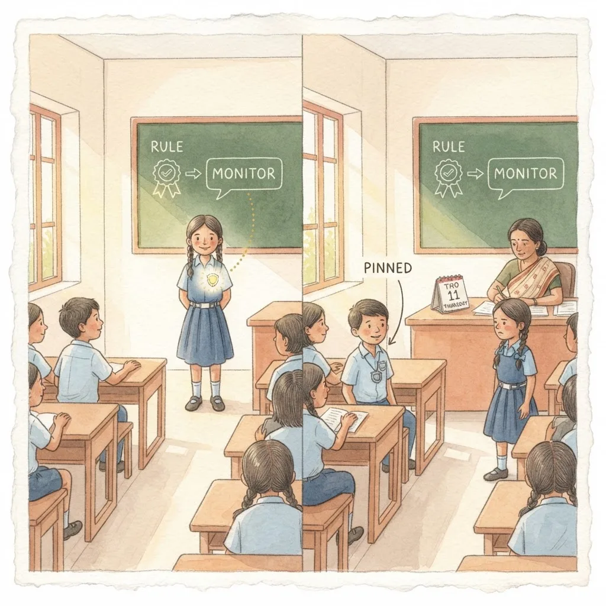
A school rule "the class monitor wears a badge" (declarative) vs. a teacher who, on Monday, pins a badge on Ravi (imperative). When Priya becomes monitor, the rule automatically means Priya; but the pinned badge stays on Ravi until someone remembers to take it off. Where it breaks: a real rule needs someone to enforce it; in CSS the browser is that someone, re-checking the pattern on every change.
The browser keeps the CSS rule alive: whenever the DOM changes, it re-matches selectors and recomputes styles. The JavaScript ran once and wrote a style attribute; nothing remembers why it was written, so nothing undoes it. A declarative statement describes a relationship that keeps holding; an imperative statement is a one-time action.
MapReduce is a programming model for processing large amounts of data in bulk across many machines, popularized by Google [32]. A limited form is supported by some NoSQL stores, including MongoDB and CouchDB, for read-only queries across many documents. (MapReduce in general is in Chapter 10; here we just look at MongoDB's use.)
MapReduce is neither a declarative query language nor a fully imperative API, but in between: the query logic is written as snippets of code that the framework calls repeatedly. It's based on the map (also called collect) and reduce (also called fold or inject) functions found in many functional programming languages.
Example: you're a marine biologist adding an observation record every time you see animals in the ocean. You want a report: how many sharks were sighted per month. In PostgreSQL:
SELECT date_trunc('month', observation_timestamp) AS observation_month,
sum(num_animals) AS total_animals
FROM observations
WHERE family = 'Sharks'
GROUP BY observation_month;
date_trunc('month', timestamp) rounds a timestamp down to the start of its calendar month. The query filters to Sharks, groups by calendar month, and adds up the animals seen in each month. The same in MongoDB's MapReduce:
db.observations.mapReduce(
function map() { // ②
var year = this.observationTimestamp.getFullYear();
var month = this.observationTimestamp.getMonth() + 1;
emit(year + "-" + month, this.numAnimals); // ③
},
function reduce(key, values) { // ④
return Array.sum(values); // ⑤
},
{
query: { family: "Sharks" }, // ①
out: "monthlySharkReport" // ⑥
}
);
map function is called once per matching document, with this set to the document.map emits a key (a string of year and month, like "2013-12" or "2014-1") and a value (the number of animals in that observation).reduce is called once.reduce adds up the animals from all observations in that month.monthlySharkReport.Book's numbers: two documents, a Carcharodon carcharias seen 25 Dec 1995 (numAnimals 3) and a Carcharias taurus seen 12 Dec 1995 (numAnimals 4). map is called once for each, giving emit("1995-12", 3) and emit("1995-12", 4). Then reduce("1995-12", [3, 4]) returns 7.
The first two documents are the book's. Anything you add is modelled.
map and reduce are restricted: they must be pure functions. They only use the data passed in, they can't run extra database queries, and they must have no side effects. These restrictions let the database run them anywhere, in any order, and re-run them on failure. They're still powerful: they can parse strings, call library functions, do calculations and more.
MapReduce is a fairly low-level model for distributed execution on a cluster. Higher-level languages like SQL can be implemented as a pipeline of MapReduce operations (Chapter 10), but many distributed SQL implementations don't use MapReduce. Nothing in SQL limits it to one machine, and MapReduce has no monopoly on distributed query execution.
Using JavaScript in the middle of a query is great for advanced queries, but it's not unique to MapReduce: some SQL databases can be extended with JavaScript functions too [33].
A usability problem: you must write two carefully coordinated JavaScript functions, often harder than one query. And a declarative language gives the optimizer more chances to improve performance. So MongoDB 2.2 added a declarative language called the aggregation pipeline [9]:
db.observations.aggregate([
{ $match: { family: "Sharks" } },
{ $group: {
_id: {
year: { $year: "$observationTimestamp" },
month: { $month: "$observationTimestamp" }
},
totalAnimals: { $sum: "$numAnimals" }
} }
]);
Its expressiveness is similar to a subset of SQL, but with JSON-based syntax instead of SQL's English-sentence style; maybe just a matter of taste. The moral: a NoSQL system may find itself accidentally reinventing SQL, albeit in disguise.
| SQL clause | MapReduce piece | Aggregation pipeline stage |
|---|---|---|
WHERE family = 'Sharks' | query: { family: "Sharks" } | $match |
GROUP BY observation_month | the key passed to emit | $group._id (year, month) |
sum(num_animals) | reduce → Array.sum | $sum: "$numAnimals" |
| result set | out: "monthlySharkReport" | returned documents |
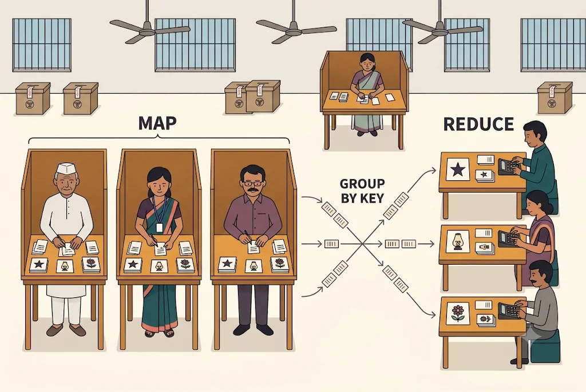
Election counting. At each booth (map), officials sort ballots into piles labelled by candidate and write "Candidate A: 312" on a slip. All slips for the same candidate go to one table (group by key). There, someone adds up the slips (reduce). Booths can count in parallel and any booth can recount if a slip is lost, because counting a pile doesn't depend on anything else. Where it breaks: real counters can phone each other; map and reduce must not (no extra queries, no side effects), which is what makes rerunning safe.
Purity is the trick. If map(doc) always gives the same output for the same doc and touches nothing else, the system can run it on whichever machine holds the doc, in any order, twice if a machine dies. Grouping by key brings all values for one month to one place, and reduce is a simple fold over them. It's flexible (any JavaScript) but you, not an optimizer, decide the shape of the computation.
Many-to-many relationships are the key feature that separates the data models. If your app has mostly one-to-many relationships (tree data) or no relationships between records, the document model fits. If many-to-many relationships are very common, the relational model handles simple cases, but as connections get more complex it becomes more natural to model data as a graph.
A graph has two kinds of object: vertices (also called nodes or entities) and edges (also called relationships or arcs). Typical examples:
Well-known algorithms run on these graphs: shortest path in a road network for routing; PageRank on the web graph to judge a page's popularity and so its search ranking.
In those examples all vertices are the same kind of thing. But graphs aren't limited to such homogeneous data: an equally powerful use is storing completely different types of object in one data store. Facebook keeps a single graph with many types of vertex and edge. The vertices are people, locations, events, checkins and comments. The edges say who is friends with whom, which checkin happened where, who commented on which post, who attended which event, and so on [34].
The running example (Figure 2-5) could come from a social network or a genealogy database: two people, Lucy from Idaho and Alain from Beaune, France. They are married and living in London.
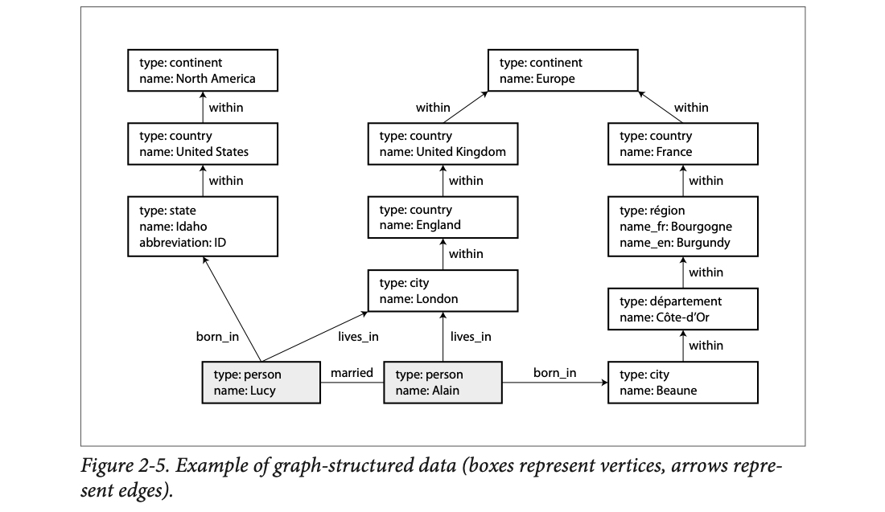
Each box is a vertex with properties (type, name, sometimes more). Each arrow is an edge with a label. Start at the grey person boxes at the bottom. Lucy: born_in → Idaho (a state, abbreviation ID) → within United States → within North America. Lucy also lives_in → London. Alain: born_in → Beaune (city) → Côte-d'Or (département) → Bourgogne/Burgundy (région, two name properties: name_fr and name_en) → France → Europe. Alain also lives_in → London → England (a country) → United Kingdom (a country) → Europe. A married edge joins Lucy and Alain. Notice the regions don't line up: the US path has 2 hops to the continent, the French path has 4.
There are several related ways to structure and query graphs. This section covers the property graph model (implemented by Neo4j, Titan, InfiniteGraph) and the triple-store model (implemented by Datomic, AllegroGraph and others), plus three declarative graph query languages: Cypher, SPARQL and Datalog. There are also imperative graph query languages like Gremlin [35] and graph processing frameworks like Pregel (Chapter 10).
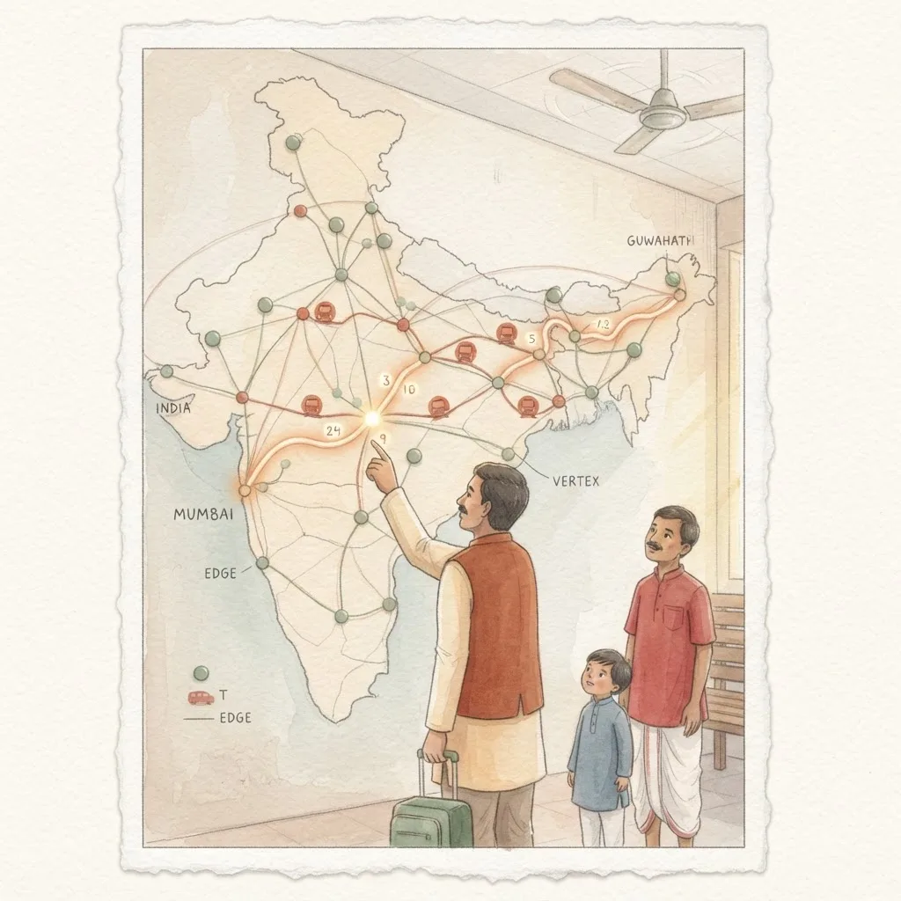
The Indian Railways map. Stations are vertices, tracks are edges. "Fastest way from Pune to Guwahati?" is a path question; you don't know in advance how many hops it takes. Now put passengers, trains and bookings on the same map as more vertex types, and "who booked a train that passes through Nagpur?" is still one walk along edges. Where it breaks: a railway map has one kind of edge (track); a graph database usually mixes many edge labels (born_in, lives_in, married) in one structure.
In tables, a relationship is a foreign key, and following a chain of them needs one join per hop, decided when you write the query. In a graph, relationships are first-class objects you can walk one at a time, so "follow within as many times as needed" is natural.
You can think of a graph store as two relational tables, one for vertices and one for edges (Example 2-2; it uses the PostgreSQL json type for properties). Head and tail are stored on each edge; to get a vertex's incoming or outgoing edges, query edges by head_vertex or tail_vertex.
CREATE TABLE vertices ( vertex_id integer PRIMARY KEY, properties json ); CREATE TABLE edges ( edge_id integer PRIMARY KEY, tail_vertex integer REFERENCES vertices (vertex_id), head_vertex integer REFERENCES vertices (vertex_id), label text, properties json ); CREATE INDEX edges_tails ON edges (tail_vertex); CREATE INDEX edges_heads ON edges (head_vertex);
Important aspects of this model:
tail_vertex and head_vertex.This gives graphs great flexibility, as Figure 2-5 shows. It contains things that would be hard in a traditional relational schema:
You could extend the graph with many more facts. For example, food allergies: add a vertex for each allergen, an edge from a person to an allergen for an allergy, and link allergens to vertices showing which foods contain which substances. Then a query can find what is safe for each person to eat. Graphs are good for evolvability: as you add features, the graph easily extends to fit new data structures.
Vertex and edge numbers in the SQL rows are modelled IDs; the data is Figure 2-5's.
A detective's evidence board: photos and cards pinned up (vertices), with coloured strings between them (edges), each string tagged "phone call", "met at", "paid". Any card can be strung to any other, and you can add a new type of string tomorrow without redesigning the board. Where it breaks: the board has no index; a real graph store keeps indexes on both ends of every edge so it can jump in either direction quickly.
Example 2-2 shows a graph isn't magic storage: it's an edges table indexed both ways. Walking forward = look up edges by tail_vertex; walking backward = look up by head_vertex. The flexibility comes from having one generic edges table with a label column, instead of one join table per relationship type.
Cypher is a declarative query language for property graphs, created for the Neo4j graph database [36]. (It's named after a character in the movie The Matrix, not related to ciphers in cryptography [37].)
Example 2-3 inserts the left-hand part of Figure 2-5. Each vertex gets a symbolic name like USA or Idaho. Other parts of the query use those names to create edges, written with arrow notation: (Idaho) -[:WITHIN]-> (USA) creates an edge labelled WITHIN, with Idaho as tail and USA as head.
CREATE
(NAmerica:Location {name:'North America', type:'continent'}),
(USA:Location {name:'United States', type:'country' }),
(Idaho:Location {name:'Idaho', type:'state' }),
(Lucy:Person {name:'Lucy' }),
(Idaho) -[:WITHIN]-> (USA) -[:WITHIN]-> (NAmerica),
(Lucy) -[:BORN_IN]-> (Idaho)
With all of Figure 2-5 loaded, we can ask: find the names of all people who emigrated from the United States to Europe. Precisely: find all vertices with a BORN_IN edge to a location within the US, and also a LIVES_IN edge to a location within Europe, and return their name property (Example 2-4).
MATCH
(person) -[:BORN_IN]-> () -[:WITHIN*0..]-> (us:Location {name:'United States'}),
(person) -[:LIVES_IN]-> () -[:WITHIN*0..]-> (eu:Location {name:'Europe'})
RETURN person.name
The same arrow notation is used in MATCH to find patterns: (person) -[:BORN_IN]-> () matches any two vertices joined by a BORN_IN edge; the tail is bound to the variable person and the head is left unnamed. Read the query as: "Find any vertex (call it person) that meets both conditions:
person has an outgoing BORN_IN edge to some vertex. From there you can follow a chain of outgoing WITHIN edges until you reach a Location vertex whose name is "United States".person also has an outgoing LIVES_IN edge. Following it and then a chain of outgoing WITHIN edges, you reach a Location whose name is "Europe".For each such person, return the name property."
The book's prose here says "LIVING_IN edge" once; the query itself uses LIVES_IN, which is what this page uses.
There are several ways to execute it:
Location vertices. With an index on name you can quickly find the US and Europe vertices. Then find all locations (states, regions, cities…) in each by following all incoming WITHIN edges. Finally, find people through an incoming BORN_IN or LIVES_IN edge on one of those locations.As usual for a declarative language, you don't specify this: the query optimizer picks the strategy it predicts is most efficient, and you get on with the rest of your app.
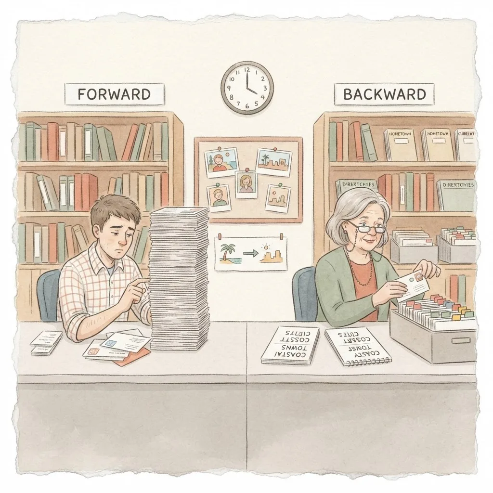
Finding "NRIs from Kerala now living in the Gulf" in a giant alumni directory. You could go through every alumnus and check both their hometown and current city (forward). Or you could list every town in Kerala and every city in the Gulf first, then look up who is linked to them (backward). Same answer; one may be much faster depending on how many people vs. places you have. Where it breaks: you'd pick by gut feel; the optimizer picks using indexes and statistics.
*0.. means "zero or more hops", so -[:WITHIN*0..]-> accepts a birthplace that is the US (0 hops), a state in it (1 hop), a city in a state (2 hops), and so on. The query doesn't care how deep the location hierarchy is; that's exactly what makes it hard in plain SQL (next plate).
Forward: 2 people. Lucy: BORN_IN Idaho → WITHIN United States ✓; LIVES_IN London → England → United Kingdom → Europe ✓ → return "Lucy". Alain: BORN_IN Beaune → Côte-d'Or → Burgundy → France → Europe, never reaches United States ✗. Answer: Lucy. Backward reaches the same answer by growing the sets {United States, Idaho} and {Europe, United Kingdom, France, England, Burgundy, London, Côte-d'Or, Beaune}, then intersecting "born in set 1" = {Lucy} with "lives in set 2" = {Lucy, Alain}.
Example 2-2 showed graph data can live in a relational database. Can we also query it with SQL? Yes, but with some difficulty. In a relational query you usually know in advance which joins you need. In a graph query you may need to traverse a variable number of edges before you find the vertex you want: the number of joins isn't fixed in advance.
In our example that's the () -[:WITHIN*0..]-> () part. A person's LIVES_IN edge may point at any kind of location: a street, a city, a district, a region, a state, etc. A city may be WITHIN a region, a region WITHIN a state, a state WITHIN a country, and so on. The edge may point straight at the location you want, or several levels below it. In Cypher, :WITHIN*0.. says "follow a WITHIN edge zero or more times", like the * operator in a regular expression.
Since SQL:1999, variable-length traversal can be written with recursive common table expressions (the WITH RECURSIVE syntax), supported in PostgreSQL, IBM DB2, Oracle and SQL Server. Example 2-5 is the same query (people who emigrated from the US to Europe), but the syntax is very clumsy next to Cypher:
WITH RECURSIVE
-- in_usa is the set of vertex IDs of all locations within the United States
in_usa(vertex_id) AS (
SELECT vertex_id FROM vertices WHERE properties->>'name' = 'United States' -- ①
UNION
SELECT edges.tail_vertex FROM edges -- ②
JOIN in_usa ON edges.head_vertex = in_usa.vertex_id
WHERE edges.label = 'within'
),
-- in_europe is the set of vertex IDs of all locations within Europe
in_europe(vertex_id) AS (
SELECT vertex_id FROM vertices WHERE properties->>'name' = 'Europe' -- ③
UNION
SELECT edges.tail_vertex FROM edges
JOIN in_europe ON edges.head_vertex = in_europe.vertex_id
WHERE edges.label = 'within'
),
-- born_in_usa is the set of vertex IDs of all people born in the US
born_in_usa(vertex_id) AS ( -- ④
SELECT edges.tail_vertex FROM edges
JOIN in_usa ON edges.head_vertex = in_usa.vertex_id
WHERE edges.label = 'born_in'
),
-- lives_in_europe is the set of vertex IDs of all people living in Europe
lives_in_europe(vertex_id) AS ( -- ⑤
SELECT edges.tail_vertex FROM edges
JOIN in_europe ON edges.head_vertex = in_europe.vertex_id
WHERE label = 'lives_in'
)
SELECT vertices.properties->>'name'
FROM vertices
-- join to find those people who were both born in the US *and* live in Europe
JOIN born_in_usa ON vertices.vertex_id = born_in_usa.vertex_id -- ⑥
JOIN lives_in_europe ON vertices.vertex_id = lives_in_europe.vertex_id;
name is "United States" and make it the first element of the set in_usa.within edges from vertices in in_usa and add them to the same set, until all incoming within edges have been visited.in_europe.in_usa, follow incoming born_in edges to find people born somewhere in the US.in_europe, follow incoming lives_in edges.If one language says it in 4 lines and another needs 29, that just shows that different data models are designed for different use cases. Pick a data model suitable for your application.
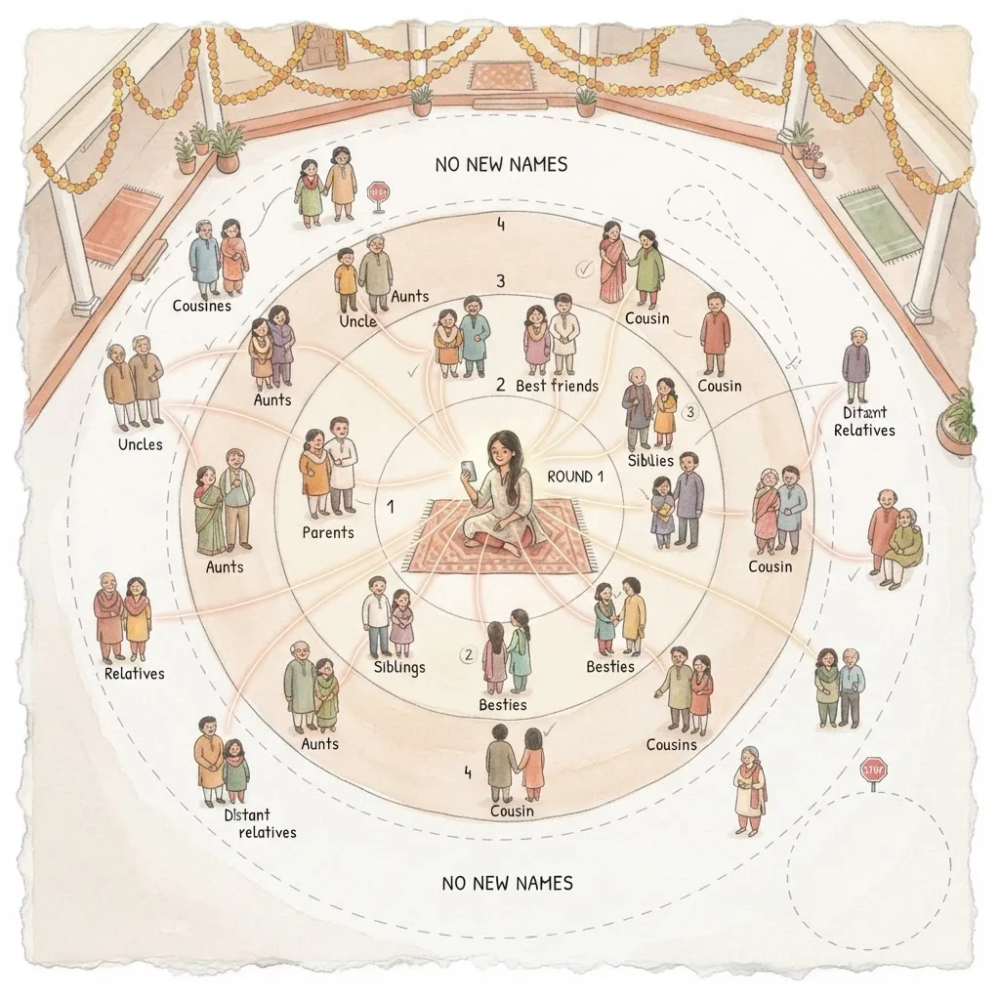
Finding everyone in your extended family on WhatsApp. Round 1: you. Round 2: everyone you have saved. Round 3: everyone they have saved… you keep repeating "add the next ring" until a round adds nobody new. That "repeat until nothing changes" is WITH RECURSIVE. Where it breaks: people's contact lists overlap and loop; UNION (not UNION ALL) is what drops duplicates so the loop eventually stops.
A recursive CTE has a seed query (the US vertex) and a recursive query that joins the current set with edges to find one more hop. The database runs the recursive part repeatedly, each time only on the rows added in the last round, until a round adds nothing. It's a breadth-first search written as joins. Works, but you write the loop's plumbing yourself.
Plate 6 described CODASYL and the relational model competing to solve IMS's many-to-many problem. At first glance CODASYL's network model looks like a graph model. Are graph databases the second coming of CODASYL? No. They differ in important ways:
| CODASYL (network model) | Graph database | |
|---|---|---|
| Schema | a schema said which record type could be nested within which other record type | no such restriction: any vertex can have an edge to any other vertex, so apps adapt to changing requirements more easily |
| Reaching a record | only by traversing one of the access paths to it | refer to any vertex directly by its unique ID, or use a property index to find vertices with a particular value |
| Ordering | children of a record were an ordered set; the database maintained the order (affecting storage layout) and inserting apps had to worry about each new record's position | no defined ordering of vertices or edges; you can only sort results when making a query |
| Queries | all imperative, hard to write and easily broken by schema changes | you can write traversals imperatively, but most graph DBs also support high-level declarative languages like Cypher or SPARQL |
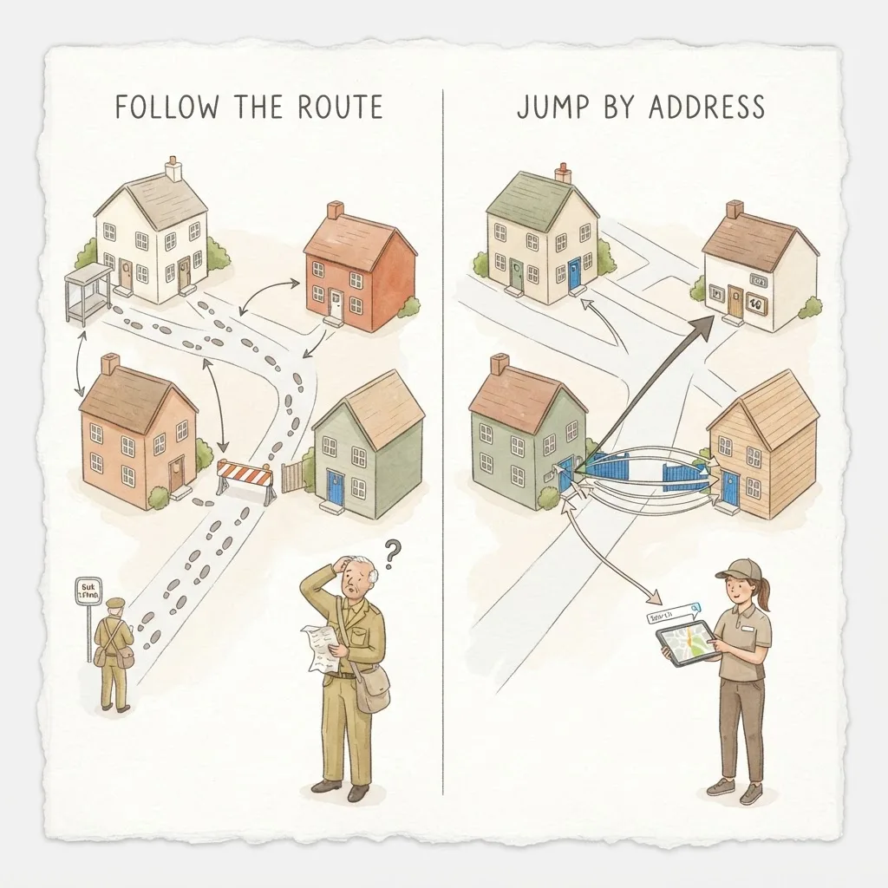
CODASYL is the village directions again (only reachable along the route, the order of houses matters, rewrite directions if a road changes). A graph DB is a map with an address search box: you can jump straight to any house by its address (ID) or search "all blue gates" (property index), and roads can connect any two places. Where it breaks: both are still "follow links" structures; a graph DB isn't a table, so pure set-style questions can still be more natural in SQL.
The difference is the same one that made relational win: data independence. CODASYL tied the logical model to physical navigation (pointers, ordered sets, fixed paths). Graph databases keep the flexible links but add IDs, indexes and declarative languages, so the database, not the programmer, decides how to reach the data.
The triple-store model is mostly equivalent to the property graph model, using different words for the same ideas. It's still worth knowing because of the tools and languages built for triple-stores.
All information is stored as very simple three-part statements: (subject, predicate, object). In (Jim, likes, bananas), Jim is the subject, likes is the predicate (verb), bananas is the object.
The subject is like a vertex. The object is one of two things:
lucy with properties {"age":33}.marriedTo is the edge label.Example 2-6 writes the same data as Example 2-3 as triples in Turtle, a subset of Notation3 (N3) [38]:
@prefix : <urn:example:>. _:lucy a :Person. _:lucy :name "Lucy". _:lucy :bornIn _:idaho. _:idaho a :Location. _:idaho :name "Idaho". _:idaho :type "state". _:idaho :within _:usa. _:usa a :Location. _:usa :name "United States". _:usa :type "country". _:usa :within _:namerica. _:namerica a :Location. _:namerica :name "North America". _:namerica :type "continent".
Vertices are written _:someName. The name means nothing outside this file; it only exists so we know which triples refer to the same vertex. When the predicate is an edge, the object is a vertex (_:idaho :within _:usa). When it's a property, the object is a string literal (_:usa :name "United States").
Repeating the subject is tedious, but semicolons let you say several things about the same subject, which makes Turtle quite readable (Example 2-7):
@prefix : <urn:example:>. _:lucy a :Person; :name "Lucy"; :bornIn _:idaho. _:idaho a :Location; :name "Idaho"; :type "state"; :within _:usa. _:usa a :Location; :name "United States"; :type "country"; :within _:namerica. _:namerica a :Location; :name "North America"; :type "continent".
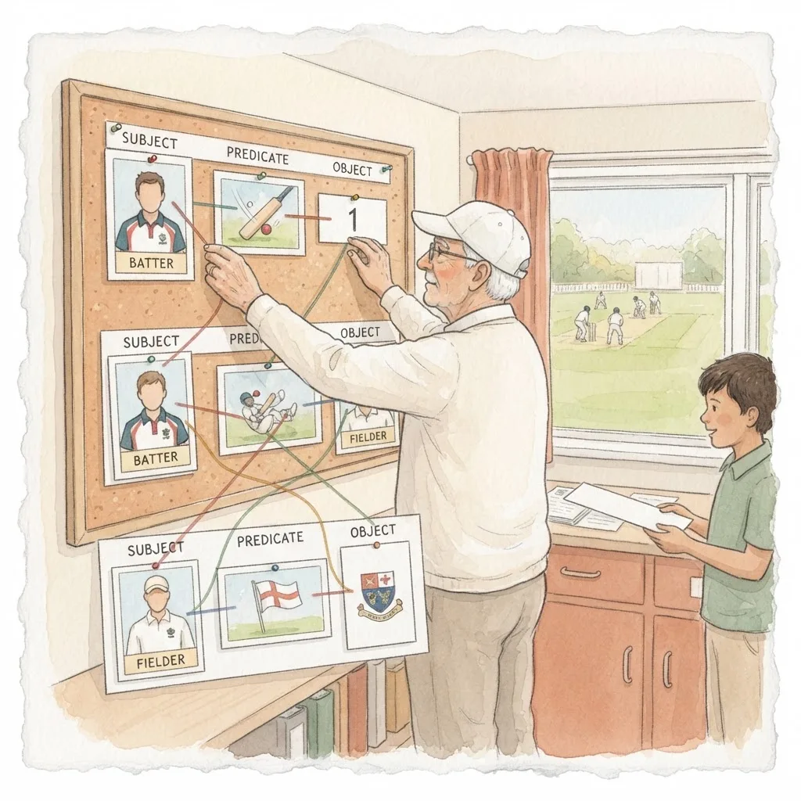
A cricket scorecard written as one-line facts: "Kohli — scored — 82", "Kohli — caught by — Smith", "Smith — plays for — Australia". Each line is tiny, but together they form the whole match. Some objects are plain values (82), some are other players (Smith), exactly the two kinds of object. Where it breaks: a scorecard has a fixed layout; a triple-store has none, any subject can get any predicate.
A triple-store flattens both properties and edges into one uniform shape. That uniformity makes storage, indexing and merging data from different sources simple (just more triples), and it's why a query language can use one pattern syntax for both properties and relationships.
Read about triple-stores and you may get sucked into a maelstrom of articles about the semantic web. But the triple-store model is completely independent of the semantic web: Datomic [39], for example, is a triple-store that doesn't claim any link to it.
Footnote vii: technically Datomic uses 5-tuples, not triples; the two extra fields are metadata for versioning.
Since many people link the two, a brief look. The semantic web is a simple, reasonable idea: websites already publish text and pictures for humans; why not also publish machine-readable data for computers? The Resource Description Framework (RDF) [40] was meant as a way for websites to publish data in a consistent format. Then data from different sites could be combined automatically into a web of data: a kind of internet-wide "database of everything".
Unfortunately it was over-hyped in the early 2000s and so far shows no sign of being realized in practice, which made many people cynical. It also suffered from a dizzying plethora of acronyms, overly complex standards proposals, and hubris.
Look past those failings, though, and there's a lot of good work. Triples can be a good internal data model for applications, even if you never publish RDF on the semantic web.
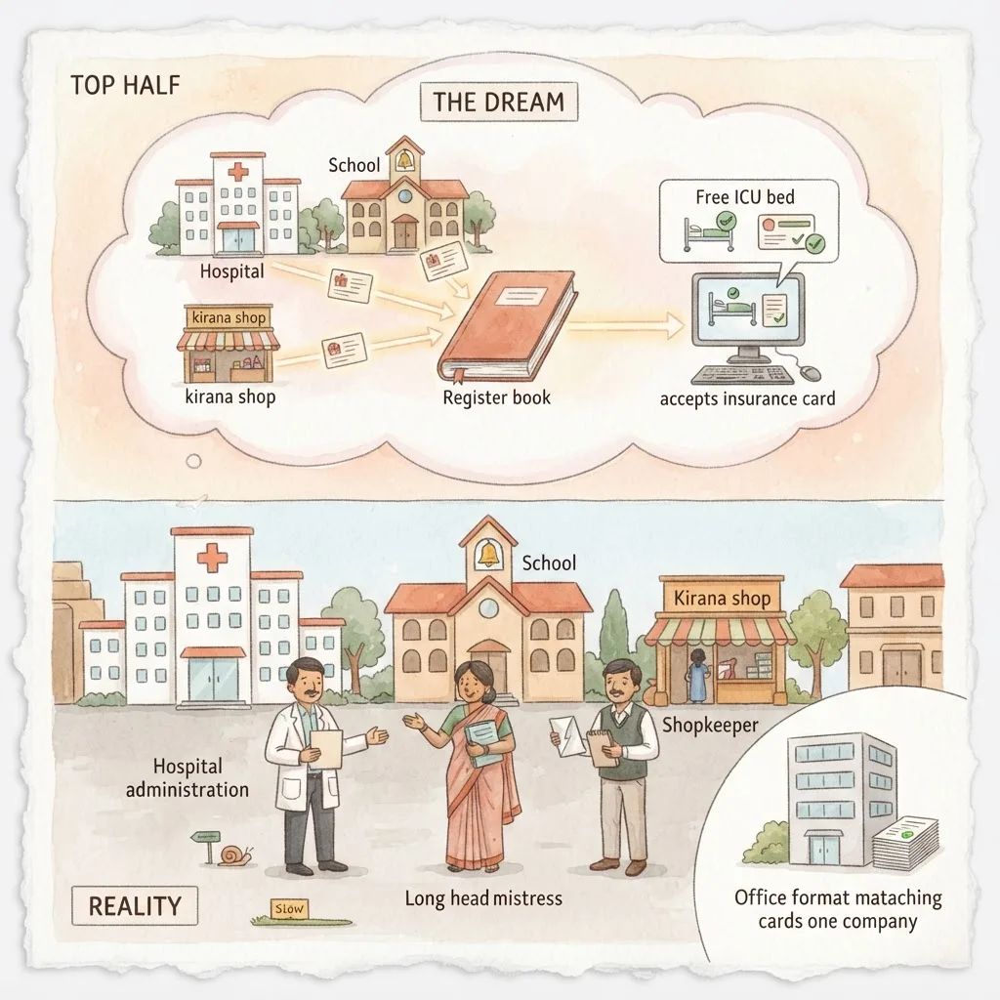
The dream of one national register where every shop, school and hospital publishes its data in the same machine-readable form, so a computer could answer "which hospitals near me have a free ICU bed and accept my insurance?" by combining them. Grand plan, slow progress. Where it breaks: the failure was social (getting everyone to agree), not that the data format was bad; the format is still handy inside one company.
Pieces of the idea did spread quietly: schema.org markup (JSON-LD, JSON for Linked Data) inside web pages feeds search engines' rich results, and public knowledge graphs like Wikidata publish RDF and accept SPARQL queries.
Turtle (Example 2-7) is a human-readable format for RDF data. RDF can also be written in XML, which does the same thing much more verbosely (Example 2-8). Turtle/N3 is easier on the eyes, and tools like Apache Jena [41] can convert between RDF formats automatically.
<rdf:RDF xmlns="urn:example:"
xmlns:rdf="http://www.w3.org/1999/02/22-rdf-syntax-ns#">
<Location rdf:nodeID="idaho">
<name>Idaho</name>
<type>state</type>
<within>
<Location rdf:nodeID="usa">
<name>United States</name>
<type>country</type>
<within>
<Location rdf:nodeID="namerica">
<name>North America</name>
<type>continent</type>
</Location>
</within>
</Location>
</within>
</Location>
<Person rdf:nodeID="lucy">
<name>Lucy</name>
<bornIn rdf:nodeID="idaho"/>
</Person>
</rdf:RDF>
RDF has quirks because it's designed for internet-wide data exchange. Subject, predicate and object are often URIs (Uniform Resource Identifiers: globally unique names that look like web addresses). A predicate isn't just WITHIN or LIVES_IN, but something like <http://my-company.com/namespace#within>. The idea: you should be able to combine your data with someone else's, and if they give a different meaning to within or lives_in, there's no conflict, because theirs are really <http://other.org/foo#within> and <http://other.org/foo#lives_in>.
The URL http://my-company.com/namespace needn't resolve to anything: to RDF it's just a namespace. To avoid confusion with http:// URLs, the examples use URIs like urn:example:within. You specify the prefix once at the top of the file and then forget about it.
within chainThe courier and its order42 triple are modelled; the two URIs are the ones the book uses.
Two companies both have an employee field called "grade". At one it means salary band, at the other it means exam marks. Merge their spreadsheets and chaos follows. RDF is like writing "Infosys:grade" and "CBSE:grade": the prefix makes each meaning unique, so merged data never collides. Where it breaks: unique names stop collisions but don't make the two meanings line up; someone still has to say how they relate.
A URI is used purely as a globally-unique name, owned by whoever owns the domain. Because names are globally unique, triples from any source can simply be poured into the same store. The @prefix line is shorthand so humans don't have to type the long form.
SPARQL is a query language for triple-stores using the RDF data model [42]. It stands for SPARQL Protocol and RDF Query Language (a recursive acronym: the first S stands for "SPARQL" itself, a detail beyond the book) and is pronounced "sparkle". It predates Cypher, and Cypher's pattern matching is borrowed from SPARQL, so they look similar [36].
The US-to-Europe query is even more concise in SPARQL than in Cypher (Example 2-9):
PREFIX : <urn:example:>
SELECT ?personName WHERE {
?person :name ?personName.
?person :bornIn / :within* / :name "United States".
?person :livesIn / :within* / :name "Europe".
}
The structure is very similar. Variables start with a question mark. These two are equivalent:
(person) -[:BORN_IN]-> () -[:WITHIN*0..]-> (location) # Cypher ?person :bornIn / :within* ?location. # SPARQL
Because RDF doesn't distinguish properties from edges (both are just predicates), the same syntax matches properties. Here usa is bound to any vertex whose name is "United States":
(usa {name:'United States'}) # Cypher
?usa :name "United States". # SPARQL
SPARQL is a nice query language: even if the semantic web never happens, it can be a powerful tool for apps to use internally.
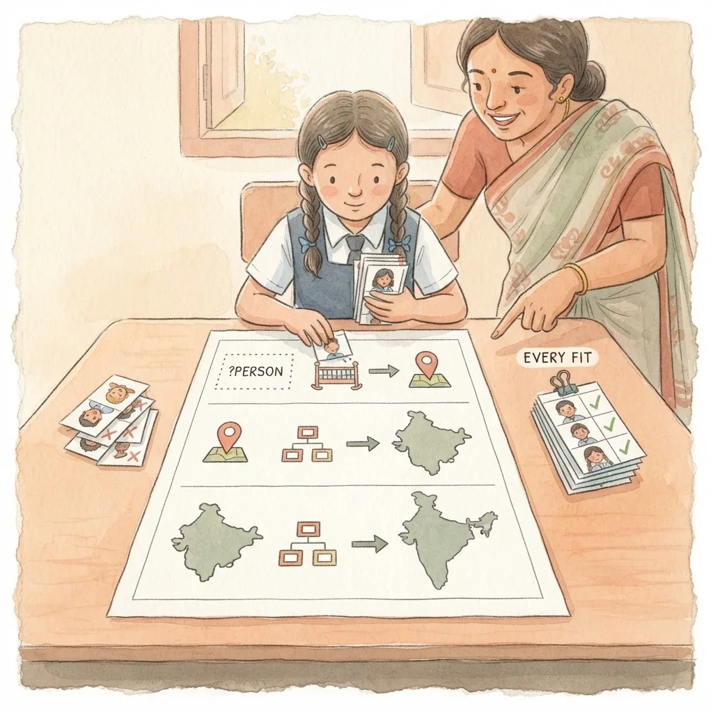
A fill-in-the-blanks worksheet: "?person was born in a place within … within a place named 'United States'". The database tries every value for the blank that makes all lines true at once. Where it breaks: a worksheet has one right answer; a query returns every value that fits.
/ chains predicates (a property path) and * repeats one zero or more times, like regex. So :bornIn / :within* / :name walks one bornIn edge, then any number of within edges, then reads the name property, and any name met along the walk can satisfy the pattern.
Datalog is much older than SPARQL or Cypher; academics studied it extensively in the 1980s [43, 44]. Few software engineers know it, but it matters because it is the foundation later query languages build on.
Every year there are more cores per CPU, more CPUs per machine, and more machines per cluster, and programmers still haven't found a good answer to working with all that parallelism. It has been suggested that declarative languages based on Datalog may be the future of parallel programming, which has revived interest in it [31]. There has also been a lot of research into evaluating Datalog queries efficiently [43].
In practice Datalog is used in a few systems: it's the query language of Datomic [39], and Cascalog [45] is a Datalog implementation for querying large datasets in Hadoop.
Footnote viii: Datomic and Cascalog use a Clojure S-expression syntax for Datalog. The book's examples use Prolog syntax, a little easier to read, with no functional difference.
Datalog's data model is like the triple-store, generalized a bit: instead of (subject, predicate, object) you write predicate(subject, object) (Example 2-10):
name(namerica, 'North America'). type(namerica, continent). name(usa, 'United States'). type(usa, country). within(usa, namerica). name(idaho, 'Idaho'). type(idaho, state). within(idaho, usa). name(lucy, 'Lucy'). born_in(lucy, idaho).
The same query (Example 2-11) looks different from Cypher or SPARQL, but don't be put off. Datalog is a subset of Prolog, which you may have met if you studied computer science.
within_recursive(Location, Name) :- name(Location, Name). /* Rule 1 */
within_recursive(Location, Name) :- within(Location, Via), /* Rule 2 */
within_recursive(Via, Name).
migrated(Name, BornIn, LivingIn) :- name(Person, Name), /* Rule 3 */
born_in(Person, BornLoc),
within_recursive(BornLoc, BornIn),
lives_in(Person, LivingLoc),
within_recursive(LivingLoc, LivingIn).
?- migrated(Who, 'United States', 'Europe').
/* Who = 'Lucy'. */
Cypher and SPARQL jump straight in with SELECT; Datalog takes a small step at a time. We define rules that tell the database about new predicates: here within_recursive and migrated. These aren't triples stored in the database; they are derived from data or from other rules. Rules can refer to other rules, just as functions call other functions or call themselves recursively. That's how complex queries are built up a small piece at a time.
In rules, words starting with an uppercase letter are variables, and predicates are matched as in Cypher and SPARQL. name(Location, Name) matches the fact name(namerica, 'North America') with bindings Location = namerica and Name = 'North America'.
A rule applies if the system can find a match for all predicates on the right-hand side of :-. When it applies, it's as though the left-hand side were added to the database (with variables replaced by the matched values). One way to apply the rules:
name(namerica, 'North America') exists, so Rule 1 applies and generates within_recursive(namerica, 'North America').within(usa, namerica) exists and the previous step generated within_recursive(namerica, 'North America'), so Rule 2 applies and generates within_recursive(usa, 'North America').within(idaho, usa) exists and the previous step generated within_recursive(usa, 'North America'), so Rule 2 applies and generates within_recursive(idaho, 'North America').By applying Rules 1 and 2 repeatedly, within_recursive can tell us all locations in North America (or any other named location) in the database (Figure 2-6).
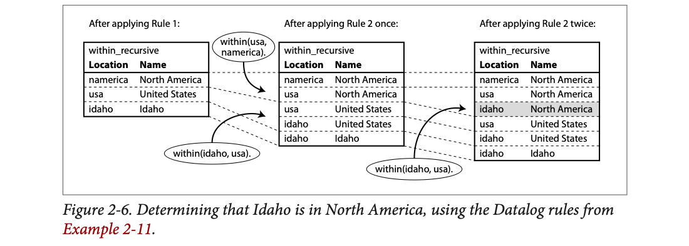
Three snapshots of the derived table within_recursive(Location, Name), left to right. After Rule 1: every place is "within" its own name: (namerica, North America), (usa, United States), (idaho, Idaho). After Rule 2 once: the oval facts within(usa, namerica) and within(idaho, usa) combine with rows from the first table to add (usa, North America) and (idaho, United States); dashed lines show old rows carried across. After Rule 2 twice: within(idaho, usa) combines with the new (usa, North America) row to add the grey-highlighted (idaho, North America). Each round lifts every location one more level up the hierarchy.
Now Rule 3 can find people born in some location BornIn and living in some location LivingIn. Querying with BornIn = 'United States' and LivingIn = 'Europe', and leaving the person as the variable Who, asks the system which values can appear for Who. We get the same answer as Cypher and SPARQL: Lucy. (Example 2-10 lists only part of the data; the lives_in and Europe facts come from the rest of Figure 2-5, added the same way.)
Datalog needs a different kind of thinking, but it's very powerful because rules can be combined and reused in different queries. Less convenient for simple one-off queries, but it copes better with complex data.
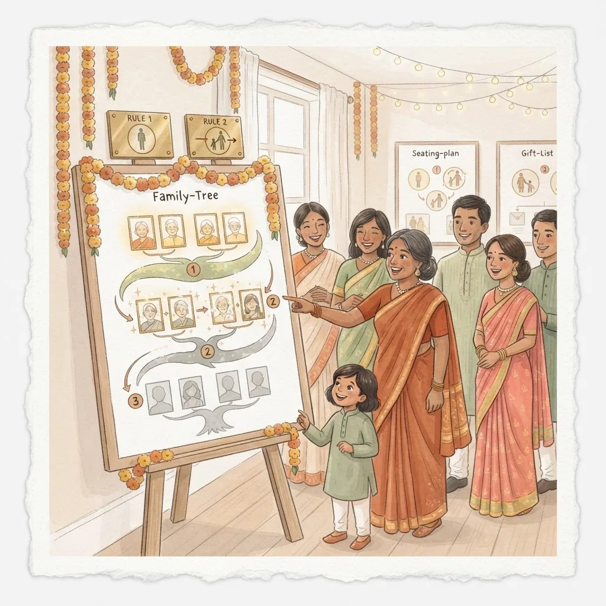
Working out relatives at a wedding. Rule 1: "everyone is in their own family". Rule 2: "if X is the child of Y, and Y is in family F, then X is in family F too". Apply Rule 2 again and again and the whole family tree fills in, generation by generation, without anyone writing a loop. And you can reuse "is in family" for seating plans, gift lists, anything. Where it breaks: people do this with intuition; Datalog does it mechanically, re-applying rules until a round adds no new fact.
The evaluation is a fixed point: keep applying all rules to all known facts until nothing new appears. Because rules only add facts (never delete) and the set of possible facts is finite, it always stops. The order of rule application doesn't change the final answer, which is why Datalog is attractive for parallel evaluation.
Facts: 3 name, 2 within. Round 0 (Rule 1): 3 rows. Round 1 (Rule 2): +2 rows = 5. Round 2: +1 row = 6. Round 3: Rule 2 finds nothing new → stop. Six derived rows, exactly the right-hand table of Figure 2-6.
Data models are a huge subject; the chapter took a quick tour of many, hoping to whet your appetite to dig into whichever fits your app.
Many data models went unmentioned. A few:
Next chapter: the trade-offs that come into play when implementing these data models.
| Document | Relational | Graph | |
|---|---|---|---|
| Best for | self-contained trees, loaded whole | regular structure, many-to-one, simple many-to-many | highly connected data, variable-length paths |
| Joins | weak / emulated in app | strong, optimizer-driven | traversal is the core operation |
| Schema | schema-on-read | schema-on-write | usually not enforced |
| Query languages here | MapReduce, aggregation pipeline | SQL (incl. WITH RECURSIVE) | Cypher, SPARQL, Datalog, (Gremlin) |
| Historical twin | hierarchical (IMS) | itself, since 1970 | looks like CODASYL, but isn't (plate 22) |
| Term | Plain meaning |
|---|---|
| Data model | The shape you express data in (tables, documents, graph) and the operations it makes easy. |
| Relation / tuple | Codd's words for table / row. A relation is an unordered collection of tuples. |
| RDBMS | Relational database management system. |
| NoSQL | A 2009 hashtag, now "Not Only SQL": non-relational, often distributed, open-source stores. |
| Polyglot persistence | Using several kinds of data store side by side, each for what it's best at. |
| Impedance mismatch | The awkward translation between objects in code and tables in the DB. |
| ORM | Object-relational mapping framework (ActiveRecord, Hibernate) that automates that translation. |
| One-to-many / many-to-one / many-to-many | One user has many jobs / many users share one region / many users link to many companies. |
| Normalization | Storing each human-meaningful fact once and referring to it by ID. Denormalization = deliberately duplicating it. |
| Foreign key / document reference | An ID pointing to a record elsewhere, resolved at read time by a join or follow-up query. |
| Hierarchical model | IMS's tree of nested records; every record has one parent. |
| Network (CODASYL) model | Records can have many parents; links are on-disk pointers; data is reached by following access paths. |
| Access path | A route of pointers from a root record to the one you want. |
| Query optimizer | The part of the DB that picks the execution plan (order, indexes, join methods) for a declarative query. |
| Shredding | Splitting a document-like structure into several tables. |
| Schema-on-read / schema-on-write | Structure interpreted by the reader (like dynamic typing) / enforced by the DB on write (like static typing). |
| Locality | Storing related data together so one read fetches it all. |
| Declarative / imperative | Say what result you want / say the exact steps to compute it. |
| MapReduce | Bulk processing with a pure map that emits key-value pairs and a pure reduce that folds values per key. |
| Aggregation pipeline | MongoDB's declarative, JSON-syntax query language ($match, $group…). |
| Vertex / edge | Node / relationship in a graph. Edge goes from a tail vertex to a head vertex and has a label. |
| Property graph | Graph model where vertices and edges carry key-value properties (Neo4j, Titan, InfiniteGraph). |
| Triple-store | Stores (subject, predicate, object) statements (Datomic, AllegroGraph). |
| Turtle / N3 | Readable text formats for triples. |
| RDF | Resource Description Framework: the semantic web's triple data model. |
| Recursive CTE | WITH RECURSIVE in SQL:1999: repeat a query until no new rows, for variable-length paths. |
| Cypher / SPARQL / Datalog | Declarative graph query languages: Neo4j's / RDF's ("sparkle") / the 1980s rule-based foundation. |
| Gremlin / Pregel | An imperative graph query language / a graph processing framework. |
| System | What it does with the idea |
|---|---|
| PostgreSQL | Relational; JSON support since 9.3, array types, WITH RECURSIVE for graph queries, json columns for property graphs (Ex 2-2); ALTER TABLE in milliseconds. |
| MySQL | Relational; in the book's era copied the whole table on ALTER TABLE; no XML support like the others. |
| Oracle, IBM DB2, MS SQL Server | Relational with structured/XML datatypes; recursive CTEs. DB2 has JSON since 10.5; Oracle has multi-table index cluster tables for locality. |
| MongoDB | Document store (BSON); no joins at the time (driver-side reference resolution); MapReduce queries; aggregation pipeline since 2.2. |
| RethinkDB | Document store that supports relational-like joins. |
| CouchDB | Document store; joins only in pre-declared views; MapReduce queries. |
| Espresso | LinkedIn's distributed document store [12]. |
| IMS | IBM's hierarchical DB, 1968, built for Apollo stock-keeping; still running on OS/390 mainframes. |
| Google Spanner | Relational, but tables can be interleaved inside parent tables for document-like locality. |
| Bigtable, Cassandra, HBase | Column families manage locality. |
| Neo4j, Titan, InfiniteGraph | Property graph databases; Neo4j created Cypher. |
| Datomic | Triple-store (really 5-tuples with versioning metadata); queried with Datalog; no semantic-web claims. |
| AllegroGraph | Triple-store. |
| Apache Jena | Converts between RDF formats. |
| Cascalog | Datalog for large datasets on Hadoop. |
| Gremlin, Pregel | Imperative graph querying; graph processing framework (Ch.10). |
| Facebook (TAO) | One graph with many vertex/edge types: people, places, events, checkins, comments. |
| ActiveRecord, Hibernate | ORMs that reduce (not remove) the impedance mismatch. |
| GenBank | Specialized genome database for sequence-similarity search. |
| LHC | Custom data systems for hundreds of petabytes. |
Layer 2: general-purpose models (JSON/XML documents, relational tables, graphs). Layer 3, how these are stored as bytes, is Chapter 3.
Greater scalability (big data, high write throughput); preference for free/open source; specialized queries the relational model doesn't support well; frustration with restrictive schemas.
All the profile's data is one continuous document, so one query/read fetches it. The relational version needs several queries (one per table by user_id) or a multi-way join, which may mean several disk seeks.
Any three of: consistent spelling, no ambiguity between same-named cities, rename in one place, localization into the viewer's language, better search (the list knows Seattle is in Washington).
Every copy must be rewritten: lots of write work, and if the update stops halfway some documents show the old name and some the new (inconsistency). With an ID, one row changes.
CODASYL effectively did it at insert time by storing pointers; relational databases do it at query (read) time on foreign keys. Document references are also resolved at read time.
You'd be stuck: you'd have to change the access paths and then rewrite lots of hand-written query code. In a relational DB you'd just add an index and the optimizer would use it without changing the query.
Reading code still assumes a structure: there's an implicit schema. Better: schema-on-read (vs. schema-on-write), similar to dynamic vs. static type checking.
SQL doesn't guarantee an order, so the result is still correct. Imperative code might depend on the order it sees, and the database can't know, so it can't safely change it.
reduce("1995-12", [3, 4]), returning 7.
So the database can run them anywhere, in any order, and re-run them after a failure. They can't make extra database queries or have side effects.
You'd have to fix the number of WITHIN hops in advance with a fixed number of joins. Locations at a different depth (Beaune is 4 hops from Europe, Idaho 2 from North America) would be missed unless you guessed the maximum depth. Recursive CTEs (SQL:1999) or Cypher's *0.. handle any depth.
Any two: no schema restricting which records nest where; direct access by vertex ID or property index (not only access paths); no defined order of vertices/edges; declarative query languages (Cypher, SPARQL).